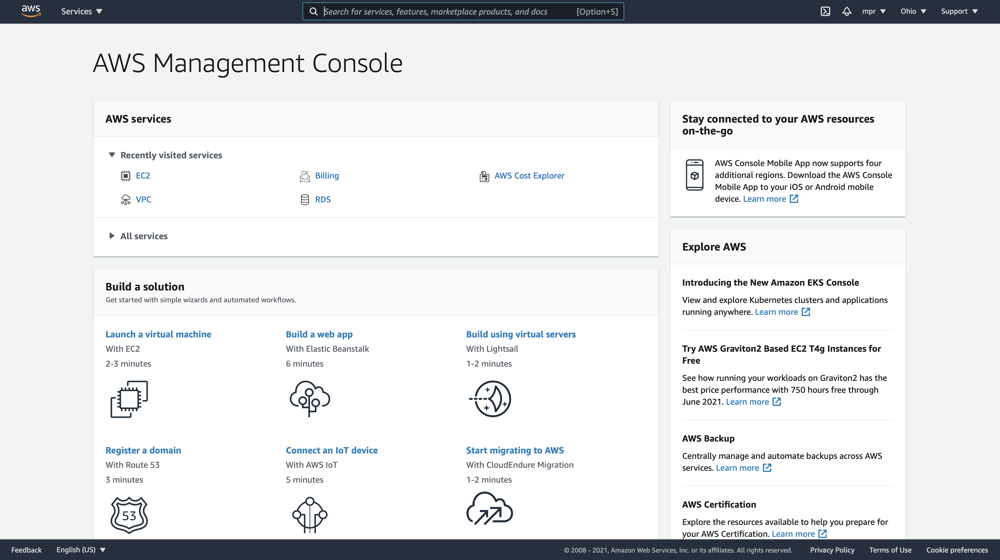
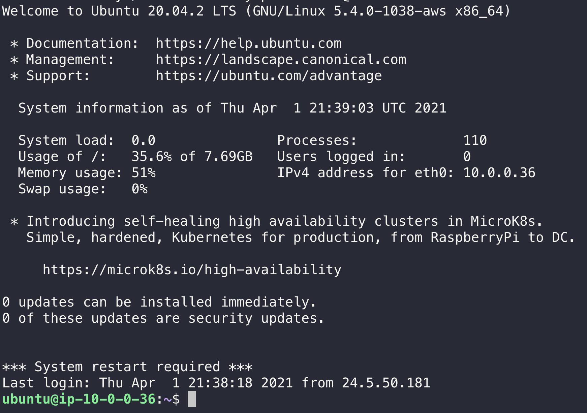
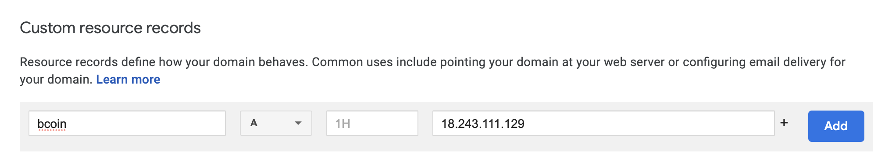
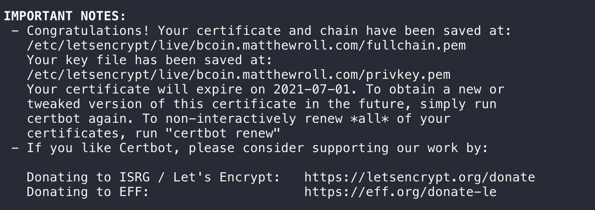

Mazirian's Garden
This exerpt from The Dying Earth struck me as a beautiful piece of language.
…Such was Mazirian’s garden – three terraces growing with strange and wonderful vegetations. Certain plants swam with changing iridescences; others held up blooms pulsing like sea-anemones, purple, green, lilac, pink, yellow. Here grew trees like feather parasols, trees with transparent trunks threaded with red and yellow veins, trees with foliage like metal foil, each leaf a different metal – copper, silver, blue tantalum, bronze, green iridium. Here blooms like bubbles tugged gently upward from glazed green leaves, there a shrub bore a thousand pipe-shaped blossoms, each whistling softly to make music of the ancient Earth, of the ruby-red sunlight, water seeping through black soil, the languid winds. And beyond the roqual hedge the trees of the forest made a tall wall of mystery. In this waning hour of Earth’s life no man could count himself familiar with the glens, the glades, the dells and deeps, the secluded clearings, the ruined pavilions, the sun-dappled pleusaunces, the gullys and heights, the various brooks, freshets, ponds, the meadows, thickets, brakes and rocky outcrops.
The Dying Earth, by Jack Vance
Homemade Pizza
I’ve been making this recipe twice a week, Friday and Saturday, almost every week since the pandemic started. Must have started sometime April 2020 but I can’t be sure. It’s really yummy and has provided a comforting weekend routine I’ve used to stay sane through this whole thing.
Here it is.
Ingredients
- 1 bag of premade dough from Trader Joes
- ½ jar of marinara sauce
- ¼ bag of shredded parmesan cheese
- ¼ bag of shredded mozzarella cheese
- ½ green pepper
- 1/8 yellow onion
- 1 jalapeno pepper
Recipe
Spread a handful of flour on your countertop. Take the premade dough out of the bag and place it on the flour. Let sit for 30 minutes to warm up to room temp.
Wait 15 minutes after putting the dough on the counter, then preheat the oven to 475.
Cut green pepper into small cubes.
Cut jalapeño into small strips.
Cut onion into strips, then into fourths.
After dough has been sitting for 30 minutes, roll out into rounded rectangle a little smaller than a baking sheet.
Transfer the dough to a baking sheet.
Spread marinara sauce over the dough, leaving a little margin for crust.
Sprinkle parmesan and then mozzarella evenly over the sauce.
Spread vegetables evenly over the cheese.
Place pizza into the oven when the oven is finished preheating.
Cook for 22 minutes.
Remove, cut into eighths and serve immediately.
Weekend Bitcoin Project Recap
I dream of a future where everyone is their own bank, money is internet native, and the world is a true decentralized meritocracy. Such things are promised by crypto and its advocates. Wouldn’t that be great.
Maybe that will happen, maybe it won’t. (I hope it does.) Regardless, bitcoin is super interesting and each passing day it looks less and less like it’s going away, and more and more like it will stick around as a legitimate financial tool in our world. So I’ve started daydreaming cryptocurrency applications and playing around with the technology.
Most recently some things came together in my mind that made me interested in building a thing that lets you send crypto to people by publishing the transactions on Twitter. I’ve been spending a bunch of time on Twitter tweeting about things I’m thinking about and trying to make internet friends. I think the platform is really undervalued at the moment and I like thinking about what will be possible in a world where it realizes its potential. Which is to say this idea that I had is not exclusive to Twitter, it can be built on any social platform, but Twitter is the one I’m thinking about and using right now.
Anyway so the core of the idea is “publishing transactions online.” The cryptographic nature of cryptocurrency means all spending activity, all sending and receiving money, can be public for anyone to look at. For every bitcoin in existence, it’s possible to trace it all the way from when it was created, every time it was spent, to what Bitcoin address currently owns it. There is no risk in this information being public because only the person who owns the secret key behind an address has the power to spend the Bitcoin associated with that address.
An implication of the Bitcoin system being secure even when all transaction information is out in the open is that you can post transactions anywhere. If there is a way to get that transaction information – info that sends Bitcoin from one address to another – to a Bitcoin miner, then the transaction will go through and the person on the receiving end will get Bitcoin.
This quote from The Internet of Money is what planted the seed in my mind when I read the book a few months ago.
“Bitcoin is fundamentally different. What I’m transmitting is not the key, but simply a signed message. It is an authorization. That authorization has two external references: (1) to where the money’s coming from by referencing an unspent output on the blockchain, and (2) a reference to where I want to send the money — by creating a new encumbrance, a new limitation on who can spend the money, usually a public key or bitcoin address. That transaction contains no sensitive data. If you steal the information in the transaction, all you know is which address the money came from, which address the money’s going to, and how much. That’s it. The signature reveals nothing. The addresses reveal nothing. There are no identifiers. You could take the transaction and print it out. You could post it on a billboard. You could shout it from the rooftop. A bitcoin transaction can be transmitted over completely unsecured Wi-Fi. By smoke signal. By light signal. With carrier pigeons. It doesn’t matter. Nothing in that message can be compromised.”
Excerpt From: Andreas M. Antonopoulos. “The Internet of Money.”
So my idea was to build an app with two parts:
- A client that constructs Bitcoin transactions for you and posts them to Twitter
- A bot that listens for these transactions and sends them to the Bitcoin network so they get processed
I did some research and figured out how to set up my own Bitcoin node using bcoin. But eventually I turned away from the approach of publishing raw transactions on Twitter. It’s super cool but it requires people to manage their own wallets so that they would have a private key to supply my app with in order to generate transactions. This is a pretty high barrier to entry because it requires not only a level of technical skill but also a deep understanding of Bitcoin and wallet management. Lots of people (aka me) don’t have both of those things but still want to use crypto.
So I started looking into the Coinbase API.
Coinbase is a large ($100B!) company that invests a lot of money into managing wallets and private keys for people. They also have an API that developers can use to programmatically send Bitcoin.
While tweeting raw transactions would be cool, I became more interested in using a third party API to send the transactions because it would be eminently more usable. So I mapped out how the app would work by taking advantage of the Coinbase API.
- User logs into the app using Coinbase OAuth, which gives the app an access token to make requests on their behalf to Coinbase.
- User authenticates the app against Twitter, thus associating their Twitter account with their Coinbase account.
- User tweets something like “@app send @myfriend 1,500 sats” where @app is the account owned by the application.
- The app has a server component which is listening for tweets to @app, picks up the tweet and looks up the sender in its database using the Twitter handle.
- The app looks up the receiver by their Twitter handle, and finds the associated Coinbase account.
- The app uses the access token stored with the sender’s account to send a request to the Coinbase API instructing it to send the given amount of Bitcoin to the receiving account.
- Coinbase sends a response asking for 2FA.
- The app sends a notification to the sending user asking for a 2FA code.
- User inputs a 2FA code into a mobile application, and the app makes a second transaction request to Coinbase, this time including the 2FA code.
- Coinbase processes the transaction and the receiving user gets some BTC 💵
I think this would work! And I think it would be a fun app that lets you use Twitter to send any cryptocurrency supported by Coinbase. But I decided to table the project for two reasons:
- There are already a bunch of these bots, which I found out are known collectively as “tip bots.” The ones I saw are free, and so there isn’t a great business model here.
- I wouldn’t be a primary user of the app. One day I hope to be paying for everything in crypto, but at the moment I just hold BTC as an asymmetric bet which might pay off over the long term.
Even though my dreams of running a Twitter crypto payments business lasted about a day and a half, I think the whole exercise was super valuable.
- I know more about the actual software behind Bitcoin,
- I designed a hypothetical crypto app,
- I wrote a Coinbase OAuth React component that I will integrate into my Staq.js project,
- I have my own self-hosted bcoin node running in the cloud (which I will continue to experiment with), and
- I got two blog posts out of the whole thing (this one and a guide for self-hosting a bitcoin node in the cloud)
Not bad for a weekend of hacking around 🙂
How to Run a Bitcoin Node on AWS For Free
This past weekend I went down something of a bitcoin programming rabbit hole while exploring an idea for sending crypto to people over Twitter. I ultimately decided not to pursue the idea any further than the the proof of concept phase, but I ended up spending a decent chunk of time playing around with self-hosting my own bitcoin node in the cloud. I wrote up my learnings into this guide, which will hopefully be useful to someone as an intro into bitcoin hacking 🙂
[Warning: The bcoin software is no longer actively maintained, but several companies (including purse.io) use it in production. As time goes on, however, and bcoin remains unmaintained, it will not be smart to use in mission-critical projects. I still think it is a valuable educational tool that can be used for smaller, non-critical projects.]
Table of Contents
- Create a Free-Tier AWS Account
- Launch an EC2 Instance
- Login to Your Server
- Install bcoin
- Run bcoin
- Secure the Node
- Access The bcoin Node Remotely
Create a Free-Tier AWS Account
AWS offers one year of free but limited resources to anyone signing up for a new account. The server that you can run within these limits is quite capable of hosting something for a personal project, so the deal is actually really great. (Note: After the year is up, if you still don’t want to pay for the hosting, you can sign up again with the same email using the + format. ex: matt+aws2021@gmail.com. Don’t worry, you’re not hurting Jeff’s bottom line.)
Head over to this link to create your account. You will have to enter payment information but as long as you stay within the free tier you won’t be charged. Everything we do in this guide falls under the free tier.
Launch an EC2 Instance
EC2 stands for Elastic Cloud Compute, and is the AWS product for running servers in the cloud. This is where we will run our Bitcoin node.
- From the AWS dashboard view (which you will see when you log in for the first time), select EC2 from the top section.

- On the next page, click the big orange button that says Launch Instance.
- Find and select Ubuntu Server 20.04 in Step 1: Choose an Amazon Machine Image (AMI). Click Next.
- Select Type t2.micro from Step 2: Choose an Instance Type. Click Next.
- Leave default settings in Step 3: Configure Instance Details. Click Next.
- Leave default settings in Step 4: Add Storage. Click Next.
- Leave default settings in Step 5: Add Tags. Click Next.
- In Step 6: Configure Security Group:
- Edit the Security group name to be bcoin-node-sg.
- Add the following rule:
- Type: HTTP
- Port range: 80
- Source: Anywhere
- Add the following rule:
- Type: Custom TCP
- Port range: 8332
- Source: My IP
- Description: bcoin node main net
- Add the following rule:
- Type: Custom TCP
- Port range: 8334
- Source: My IP
- Description: bcoin wallet main net
- Click Review and Launch.
- Click Launch.
- When the modal asks you to download a new key, name it something descriptive like bcoin-node-key, and click Download.
- Navigate back to the EC2 Dashboard and click into the Instances page. You will see your new server! You can name it something fun by clicking the pencil that shows up in the Name column. Mine is called boringly just “bcoin”.
- Navigate back to the EC2 Dashboard and click into the Instances page. You will see your new server! You can name it something fun by clicking the pencil that shows up in the Name column. Mine is called boringly just “bcoin”.
Login To Your Server
First thing is to move your private key file to some location where you’ll remember where it is. I have a ~/keys directory in my home folder where I keep private keys. You can set that up like this
$ mkdir ~/keys
$ mv ~/Downloads/bcoin-node-key.pem ~/keysThen find the IP address of the new server. You can find it by clicking on its row in the Instances page in the EC2 console, and copying the Public IPv4 address from the top middle of the Details section.
Then, using the key as authentication, ssh into your new server at that address.
$ ssh -i ~/keys/bcoin-node-key.pem ubuntu@You should get a prompt that looks something like this:

Yay!
Install bcoin
Run this command to install nvm, a version manager for Node.
$ curl -o- https://raw.githubusercontent.com/nvm-sh/nvm/v0.37.2/install.sh | bashThen log out and back in so that the nvm executable gets put into the PATH.
And run this to install the latest version of Node.
$ nvm install nodeInstall build tools
$ sudo apt-get install build-essentialDownload bcoin
$ git clone git://github.com/bcoin-org/bcoin.gitInstall bcoin
$ cd bcoin
$ npm rebuild
$ npm install --globalThis will install the bcoin executable on your system.
Run bcoin
Next step is running the node, which you can do by executing the bcoin command and passing in some configuration options.
It’s possible to run a full node with bcoin, which means downloading every single block included in the Bitcoin blockchain and keeping it on disk. This requires a lot of disk space – over 300GB – and that would mean paying for that storage because it doesn’t fall within the AWS free tier.
So instead of running a full node, we will run a Simple Payment Verification (SPV) node. This means instead of our node downloading and saving every single block in the Bitcoin blockchain, it will just download the headers for the entire blockchain. This takes up much less disk space, not even a gig on my machine. This trimmed down version of a node will still enable us to send and store Bitcoin, but we are essentially trusting other full nodes that the chain information we are receiving from them is correct.
Ok so we want to run an spv node, and we want to expose the Node API through HTTP so we can send send requests to get info, initiate transactions, and manage our wallet. We also want to run the node as a background process so that it keeps running after we log out.
The bcoin executable provides configuration options for supporting this setup. Here is the command you want to run. Note that you will probably want to change the API key.
$ bcoin \
--http-host=0.0.0.0 \
--api-key= \
--wallet-http-host=0.0.0.0 \
--wallet-api-key= \
--spv \
--daemon To confirm bcoin is running properly, run bcoin-cli info ——api-key <your-api-key>. You should see output that looks something like this:
{
"version": "2.1.2",
"network": "main",
"chain": {
"height": 677373,
"tip": "0000000000000000000b200dd7167a1751b8542e4a74bdb60ee54a55666a582f",
"progress": 1
},
"indexes": {
"addr": {
"enabled": false,
"height": 0
},
"tx": {
"enabled": false,
"height": 0
},
"filter": {
"enabled": false,
"height": 0
}
},
"pool": {
"host": "0.0.0.0",
"port": 8333,
"agent": "/bcoin:2.1.2/",
"services": "1000",
"outbound": 8,
"inbound": 0
},
"mempool": {
"tx": 0,
"size": 0,
"orphans": 0
},
"time": {
"uptime": 36685,
"system": 1617325819,
"adjusted": 1617325819,
"offset": 0
},
"memory": {
"total": 285,
"jsHeap": 12,
"jsHeapTotal": 13,
"nativeHeap": 271,
"external": 8
}
}Secure The Node
Set Up A Domain Name
The bcoin node that’s running at this point is serving unencrypted connections. This isn’t secure and we need to do something about it, otherwise people would be able to snoop on your communications to the node. They would be able to steal your API key and then use that to steal your Bitcoin 😮
To secure the communications to our node, we will set up an SSL (Secure Sockets Layer) Certificate on the server, which will be used to encrypt traffic.
SSL certs are free from a great product called LetsEncrypt, but we need a domain name first. There are lots of places to get a domain name, and most are on the order of $10-12 per year. I use Google Domains.
If you already have a domain name, you don’t need to buy a new one for this project. You can just use a subdomain like bcoin.mywebsite.com. In fact that’s what I’m doing and is what we will learn how to do in this guide.
So, please go and buy a domain name if you don’t have one yet 🙂. The following sections will assume you have one.
Create An A Record
Before we can set up our SSL cert, we need to point our domain name at the server. Do this by going into the admin panel of whatever domain name registrar you bought the domain from. For Google Domains,
- Go to this link
- Click into the domain name
- Select DNS from the left side panel
- Scroll all the way down to the Custom resource records section
- Type bcoin into the leftmost text box, and copy/paste your server’s IP address into the rightmost text box.

- Leave the record type as A.
- Click Add.
Set Up LetsEncrypt
We will be using the LetsEncrypt software developed by the non-profit Internet Security Research Group (ISRG).
Run the following
$ sudo snap install core; sudo snap refresh core
$ sudo snap install --classic certbot
$ sudo ln -s /snap/bin/certbot /usr/bin/certbot
$ sudo certbot certonly --standaloneWhen prompted for the domain name, enter it as bcoin.mywebsite.com without any protocol information like http:// or https://.
When the certification process finishes you’ll see an output with something like this at the bottom.

The first file listed in that message is the certificate file, and the second file listed is the key file. These will be important in a second when we update our bcoin command with the newly created SSL info.
In order to update our bcoin node to start encrypting traffic, we need to stop it and start it up again with configuration options containing the SSL files.
Stop the bcoin node by running
$ bcoin-cli rpc stopThen start it up again with the following command. We pass in configuration options to point both the node server and the wallet server to the same SSL cert files.
$ bcoin \
--http-host=0.0.0.0 \
--api-key= \
--wallet-http-host=0.0.0.0 \
--wallet-api-key= \
--ssl-cert= \
--ssl-key= \
--wallet-ssl-cert= \
--wallet-ssl-key= \
--spv \
--daemon Access The bcoin Node Remotely
We’ve seen that it’s pretty easy to SSH into the server that’s running the node and interact with it from there, but there is a much more flexible way of querying the node.
When we passed in the http-* and ssl-* config options to the bcoin daemon, we told it to start up a web server and start listening to API requests. We will now do some setup on our local machine and see some examples of sending API requests to the cloud server from your computer at home or wherever you are.
On your local machine (which just means your laptop or desktop when you’re not logged into a remote server), follow the steps from the Install bcoin section above to install bcoin. We won’t be using it to run a node, but it comes bundled with command line tools for querying the node and the wallet server running with the node.
Create Config Files
Once you have bcoin on your system, create a file at ~/.bcoin/bcoin.conf and add the following:
url: bcoin.mywebsite.com
api-key: Create another file at ~/.bcoin/wallet.conf and add the following:
url: bcoin.mywebsite.com
api-key: Now when we use the command line tools, they will automatically find the remote host and the api key, so we won’t have to explicitly pass in those options for every command.
Run Some Commands
Get Node Info
The most simple command is
$ bcoin-cli infoIt shows you some metadata about your node like how much progress it’s made syncing up with the full chain (1 means it is fully synced), what version it’s running, how long it’s been running and how much RAM it’s using.
Manage Your Wallet
The bcoin software comes with a bitcoin wallet, which you can see a more in depth guide for here. I basically followed that guide and will just reproduce some commands here.
To see all of the existing wallets, run
$ bwallet-cli admin walletsTo create a new account inside an existing wallet run
$ bwallet-cli account create --id= To get the address of an account in an existing wallet, run
$ bwallet-cli address --account= --id= That’s about the extent to which I’ve explored the bcoin wallet software at this point. Like I said up top, I’m not storing any BTC in this node. Just hacking around for pure fun so far.
Starting a Software Business is Getting Easier
It used to be that starting a software company was hard. It was hard because you had to do everything yourself, and doing a lot of those things was expensive. Over the past 25 years, since the birth of what we would call the first modern software companies – Google, Yahoo, Viaweb – the trend has been that starting a software company involves doing fewer things yourself, and the things that you end up having to do cost less money.
We are at a point in 2021 where you can start a software company and launch a product entirely from your couch in around two days for around $500. And that $500 is literally just for incorporating the company as a legal entity. The product you can build and host for free. And you don’t even need to pay that $500 if you want to run your business as a sole proprietorship, which is just a fancy term for a one-person business that doesn’t have a legal entity.
We are also at a point in 2021 where software companies are making money hand over fist at crazy high margins. People who own equity in successful software companies are getting massively rich every day. But unless you live in a small number of locations and run in certain circles, you probably don’t know very many people who have started their own software company. Why is that? It’s a low-risk strategy for becoming very rich, so what gives?
One reason is of course lots of people just don’t want to. Starting and running a business requires a lot of initiative and time commitment, and comes with a lot of responsibility. You have to deal with customers when people start using your product. You have to make sure your software stays online. All that. Some people just don’t want that headache, even if it might result in them getting rich. They like the stability, predictability, and narrow responsibilities of whatever job they currently have. That’s cool.
But my guess is there are millions of people that don’t start software businesses simply because they don’t know how. And even if they have heard some things about what to do from talks and blogs, they don’t have the kind of playbook that would put them over the edge to believing they could really do it.
I think a playbook like that is possible to create, and I think the fact it doesn’t exist yet is just because we are so early in the internet age. We are still figuring out what it means to be always online and to integrate software into more of life. The knowledge about how to reliably build a profitable software business exists, it’s just not evenly distributed yet.
There is a combination of skills that will become more common to see in a single person. Coding, design, copy writing, marketing, selling, finance. The fundamental skills of running a solo software company on the web. As tools for building apps get more powerful, you’ll need less specialization in programming and design, so it will be possible to also be good enough at the business-side skills. This is already happening but is not evenly distributed. It’s happening with people who care enough about building their own software company to work on it on nights and weekends, teaching themselves the skills outside their current expertise. But the people who are on the frontier now, figuring it out for themselves, will write down what they figure out and soon “indie software founder” will be a viable career option people consider starting in high school.
There will be online curriculums that teach you everything from JavaScript to Figma to good copy editing. There will be playbooks for finding toy business ideas and executing on them and making real money, just to get a taste of what it’s like and to show you that it’s possible.
And the thing about software is that it is capital. It can make money for you while you’re sleeping, or more exciting, while you’re hanging out with friends and family. The cool thing about software companies becoming easier to start is not that everyone will be rich and famous like Mark Zuckerberg. Most people would hate to be Mark Zuckerberg. The cool thing about software companies becoming easier to start is that more people can spend less time working, because their company is making money in the background.
What I Really Want
[This post is inspired directly by some notes Michael Nielsen posted about fundamental limits of matter, and indirectly by ideas I have about what is possible if humans can live on universal timespans and control matter at the subatomic level.]
When I think about what I want my life to look like in ten, twenty, thirty years, there’s an unspoken constraint that guides the space of answers. The question I’m really answering is something like “What do I want my life to look like given current levels of technology and what technology will reasonably be available in ten/twenty/thirty years?”
It’s definitely useful to have that constraint there. I have to live with the current levels of technology, and the current level of technology certainly dictates what is likely to be available throughout the course of my lifetime.
But if only just as a thought exercise, I want to ask that question sans constraint. I want to ask the question “What do I want out of a life in this universe?” If I could actually have my wish, or if I lived during a time of such technological prowess that it wouldn’t need to be considered a wish, here’s how I think I would like to spend my time.
Mostly I want to actually go and see the universe. I want to fly through the atmospheric layers of a gas giant, cruise through the accretion disk of a black hole, walk across thousands of planets each with wildly different geographies and lifeforms and ecosystems. I want to watch a supernova up close.
I want to just be a passive observer from the beginning to the end of an entire civilization of sentient beings. I want the ability to suspend time and teleport so that I can see every event unfolding from every perspective, just because I think that would be so interesting.
I want to live for billions of years, so that I can spend the time to master many deep and complicated things. Things like
- How to do interstellar and intergalactic travel
- How to integrate biology with machinery
- How this technology works that is keeping me alive for so long past natural human lifespan
- How this technology works that is letting me travel vast distances at great speed
I want to spend years drifting between galaxies, in the complete emptiness of the vacuum, with nothing to see for hundreds of thousands of lightyears in all directions. I might use that time to write, build, or just think.
I want to be able to do all of the above with my best friends. I think the coolest thing about longer lifespans is more time together.
I want to study architecture and build beautiful houses on faraway planets.
I want to learn to cook all the food.
I want to use all of these experiences to write a great novel (or many great novels).
I think I still want my life to be about designing, creating, and building. I have no idea what sorts of things will be possible to build in this hypothetical life, given all of the insane tech that must be available for it to be possible. But I think I would still find fulfillment in creating things for people. That instinct is probably timeless.
So how hypothetical is all this stuff? I think some of it is less crazy than it might seem at first, if we accept two things:
- Human aging is a biological engineering problem and there is currently good enough evidence that it can be stopped and controlled.
- Vehicles made from custom molecular structures that allow humans to survive in extreme environments like vacuum and intense heat are not impossible to build given what we know of the laws of physics.
As for the time travel and teleportation stuff, fine, maybe that’s too much to ask. But I think there are strong signs that aging is solvable and that we haven’t even started building what is possible to build in principle.
Some Thoughts On Tool Building
Emacs vs. Vim might be the most famous flame war in programmer culture, but there are plenty of other dimensions along which coding identity splits.
There is static vs. dynamic typing, functional vs. imperative programming, frontend vs. backend, probably more. My favorite is “tool builder” vs. “tool user.” The tool builder in this scenario is the kind of programmer who is rarely satisfied with how their tools work out of the box, and spends hours and hours configuring and hacking their computing environment to work exactly how they imagine it should.
The tool user is the kind of programmer who learns to use the tools as they were designed and strictly uses those tools to get their work done. Their work involves programming other systems, and that’s what they spend their time on.
I am a tool builder. I cut my tool building teeth configuring window managers like i3, awesome, and fluxbox. My current hobby is Emacs customization, which I spend around 5-10 hours on every month.
So that’s my bias.
I know people who are tool users. Programmers who think time spent tweaking tools is time they could be billing clients, getting their actual work done.
I don’t have a value judgement to make here. I don’t think tool building is “better” than tool using, although I will advocate for that approach given the chance. I’m just interested in the philosophies implied by these two types of people.
It’s hard, though, because there are probably many reasons people end up being tool builders vs. tool users. Here’s mine.
I like making computers do things because it’s fun. Figuring out the rules of a system and using that knowledge to cause something interesting to happen is just a good time. And the activity of loading data structures and an execution model into your head, and then trying to simulate ways in which you can manipulate those things to get what you want is something that brings me real pleasure. I was doing it long before I got paid to do it.
And so tinkering with my tools brings me back to my roots, to a time when I was writing code for the sake of writing code, and there were no stakes. It’s certainly a form of escapism. It’s like my version of video games, because I don’t play video games.
But there is also a productive side to it. I care about fine tuning my tools because I know it benefits my day-to-day workflows for writing code and writing blogs. I view tool building as a way to remove friction from my work, making it easier to get into and stay in a flow state.
This is not really a quantifiable benefit. I can’t point to a number of hours that I’ve saved because of tools that I’ve built or tweaked. That’s not the point. I’m saying I believe there to be a productivity benefit, but I don’t need anyone else to believe that. I build tools because that’s my choice.
The Missing Piece to helm-projectile
Obviously you should be able to start a search by choosing a directory in the current project and then doing a recursive grep from there.
But for some reason that’s not built into helm-projectile or helm-rg, my preferred search interface.
So after like several months of living with this hole in my life, I took an hour and wrote it. I didn’t know it would only take an hour, of course, otherwise I probably would have done it sooner. I haven’t written much emacs lisp, so I figured it could be a little bit of a struggle. But in the end it wasn’t too hard to find the functions I needed by reading the helm-rg code and the projectile code. Especially since helm-rg has a function called helm-rg--set-dir which does mostly the same thing, except the interface is not as smooth as I would like.
The interface I would like is this:
- Start a projectile folder search through the current project w/ a super convenient keybinding. Maybe
SPC d /. - Find the folder you want to treat as the root of your search. The important part here is that it’s a fuzzy search. You should only need to type enough characters to select the folder you’re looking for from all the rest.
- Select the folder. This will start a string search using whatever tool you have set up to do your grepping (like I said, I like to use
helm-rgcuz it’s super fast).
Looking through the projectile.el source code, I found two functions that do all the heavy lifting for this feature: projectile-complete-dir and projectile-acquire-root.
projectile-complete-dir takes a directory as its only argument and presents you with a helm popup where you can use fuzzy search to select a folder below that directory. This is what we use to quickly pick the search root.
projectile-acquire-root takes no arguments, and uses the current buffer to find the project root. You just call it from wherever you are and it finds the nearest ancestor directory that has a .git file.
By combining these two it was pretty easy to write a function that runs my desired behavior.
(defun mpr/helm-rg-from-dir ()
(interactive)
(let ((helm-rg--current-dir
(expand-file-name
(projectile-complete-dir (projectile-acquire-root))
(projectile-acquire-root))))
(helm-rg helm-pattern)))
And then I bound it to the convenient SPC d / like I mentioned above.
(evil-define-key 'normal (kbd "SPC d /") 'mpr/helm-rg-from-dir)
Aaaaaaaand we’re back astralcodexten.substack.com 📖
How to Override evil-collection Keybindings
Having spent at least an hour over the past couple days figuring out how to do this, I thought it would be worth putting up a clear explanation for future googlers of said question. It’s currently possible to find out how to do this via google, but the answer is at the bottom of a thread on a GitHub issue and I feel like it would be nice for the top result to just straight up ask and answer the question.
The Problem
For each mode specified in evil-collection-mode-list, evil-collection adds a with-eval-after-load call to bind the vim-like keys you love so much for that mode. The way with-eval-after-load works, perhaps unsurprisingly, is it runs code to define those keybindings after you open a buffer which has a mode included in evil-collection’s mode list. Which means any keys you define for that mode inside your config file will get overriden by keys defined by evil-collection.
The Solution
Fortunately evil-collection provides a hook that we can piggy-back on to define our own bindings after evil-collection defines its bindings. The hook is called evil-collection-setup-hook, and can be used like this, for instance, to add a binding to prodigy-view-mode:
(defun my-prodigy-view-mode-keys (&rest a)
(evil-define-key 'normal prodigy-view-mode-map (kbd "q") 'quit-window))
(add-hook 'evil-collection-setup-hook 'my-prodigy-view-mode-keys)
And if you are using use-package, you can take advantage of some nice syntactic sugar, like this
(use-package prodigy
:hook (evil-collection-setup . (lambda (&rest a)
(evil-define-key 'normal prodigy-view-mode-map (kbd "q") 'quit-window)))
;; other config
)
How to compile Emacs feature/native-comp on macos
I was finally successful in compiling and running the feature/native-comp build of Emacs! This was my second try, after having failed the first time several months ago. This new build promises huge performance improvements which I’m very much looking forward to enjoying in my day-to-day use of the best editor on the planet :)
Since it took me two tries and several hours of hacking to get this working, I figured it would be useful to write down the winning recipe for others so they might have an easier time of it. The process is not complicated or very long, but there are a couple steps that are not obvious in the documentation I’ve seen, and a couple hangups you might run into that prove difficult to resolve.
I’m running macOS Big Sur.
Build
- 1. Clone build-emacs-for-macos
- 2.
cdto that directory - 3. Run
brew bundle - 4. Check that you have Ruby version at least 2.3 by running
ruby --version - 5. Run
./build-emacs-for-macos feature/native-comp
Run
- In your emacs configuration file,
init.elor other, put(setq comp-speed 2)somewhere near the top. - In the
build-emacs-for-macosdirectory there will be a folder calledbuilds. In that folder there will be a single.tbzfile. Open the Finder and double click on that file to unzip it. It will unzip to a new Emacs application in the same folder. - Double click the new Emacs application to run it.
- On first startup, Emacs will compile to native code elisp files for builtin packages and packages that get loaded by your configuration. You can see the progress by switching to the
*Async-native-compile-log*buffer.
Notes
- Since the feature/native-comp branch builds Emacs at version 28, there may be some breaking changes that will require some updates to your config. For example I ran into a problem caused by a change in the API signature of some macros. The version of
evil-modethat I was using was slightly out of date and so I had to pull the most recent updates before Emacs would start successfully.
I started a Links page where I’m collecting things I found online that have shaped who I am.

Everything else will fade but I’ll remember that 2020 was the year the New York Times killed Slate Star Codex and it will still be the worst year on record.
Emacs Status Update
tl;dr: I decided to exit pre-built Emacs configuration packages and build my own config from scratch. See the whole thing at the bottom of this post.
Last time I wrote about Emacs it was about how to set up JavaScript editing tools in Doom Emacs. I had switched to Doom Emacs because I was having significant performance problems with Spacemacs, and Doom advertised a bunch of performance optimizations. It turns out I was just doing something stupid with Spacemacs, probably like not restarting it for months or letting some configuration bloat build up. So I ended up switching back because I prefer the Spacemacs defaults to Doom. And the performance problems went away.
But I still was not able to get the editing tools working that I wanted to use when writing JavaScript. Specifically I want to have
- Automatic linting
- Automatic formatting
- Autocompletion with language and type support
Which means I need to have three plugins working together. Those being
- flycheck
- prettier-js
- lsp-mode
This is one of those things that should be really easy to get working. Writing JavaScript is something so many people need to do that it should be possible to set up a good environment in just a few lines of code, and there should be high quality guides all over the internet explaining how to do it. Maybe Emacs is just not a popular enough editor. Anyway I was surprised at how difficult it is to get working in Spacemacs.
I finally almost got something working by configuring my layers like this
syntax-checking
(auto-completion :variables
auto-completion-enable-snippets-in-popup t
:disabled-for org git)
lsp
(javascript :variables
node-add-modules-path t
javascript-backend 'lsp
javascript-lsp-linter nil)
And there are a couple other pieces of the configuration like
- Installing the
add-node-modules-pathpackage - Installing the
typescript-language-servervia npm - Installing
eslintvia npm
But even then, when I open a .jsx file, Emacs fails to find my eslint executable. And I just couldn’t get exec-path-from-shell working to fix that.
I got fed up and I figured that the source of my frustration is how many abstractions and layers of code there are between me and the actual packages when using Spacemacs.
So I decided to build my config from scratch. Which is something that I had avoided until now. I really liked Spacemacs. It came batteries included, and I really like those batteries. I also love the ergonomic keybindings. Using SPC as the leader key and having the helpful hydra there to make everything super discoverable was a massive jump in Emacs sophistication that I didn’t even know existed before I found Spacemacs. That was almost four years ago, and now I’m a much more experienced Emacs user. I feel like I know what the landscape of popular packages looks like, and I’ve put in a decent amount of time writing my own elisp. So three days ago when I felt like the batteries-included approach of Spacemacs was hindering my ability to understand and have control over my configuration, I decided it was the right time to build my own configuration.
I had been seeing the straight.el package manager being used by some people who I consider pretty hardcore Emacs users, so that was where I decided to start my custom configuration.
Turns out building a configuration with straight.el is suuuuuper easy. Just pop this code at the top of your init.el.
(defvar bootstrap-version)
(let ((bootstrap-file
(expand-file-name "straight/repos/straight.el/bootstrap.el" user-emacs-directory))
(bootstrap-version 5))
(unless (file-exists-p bootstrap-file)
(with-current-buffer
(url-retrieve-synchronously
"[raw.githubusercontent.com/raxod502/...](https://raw.githubusercontent.com/raxod502/straight.el/develop/install.el)"
'silent 'inhibit-cookies)
(goto-char (point-max))
(eval-print-last-sexp)))
(load bootstrap-file nil 'nomessage))
(straight-use-package 'use-package)
Now you have the full power of the beautiful use-package configuration interface at your fingertips. On average I’m able to install and configure each package I enjoyed having in Spacemacs in less than five lines. Here’s an example of how I install and configure helm.
(use-package helm
:straight t
:config
(helm-mode 1)
;; For navigating in helm popups
(define-key helm-map (kbd "C-j") 'helm-next-line)
(define-key helm-map (kbd "C-k") 'helm-previous-line))
I went through all the functionality I had come to expect from Spacemacs and just installed the packages directly. Here’s a list of everything I’m currently using.
- add-node-modules-path
- all-the-icons
- bind-map
- company
- doom-modeline
- doom-themes
- evil
- evil-collection
- evil-escape
- evil-leader
- exec-path-from-shell
- flycheck
- helm
- helm-projectile
- helm-rg
- helm-swoop
- js2-mode
- lsp-mode
- magit
- org
- org-bullets
- org-roam
- org-variable-pitch
- poet-theme
- popwin
- prettier-js
- projectile
- restart-emacs
- rjsx-mode
- scala-mode
- sublime-themes
- undo-tree
- web-mode
Like I mentioned above, one of my favorite things about Spacemacs is the ergonomic, intuitive, modal keybindings. It took me a few minutes to figure out how to configure that for myself, but I eventually found a mention of bind-map in Spacemacs documentation.
bind-map works by taking pairs of (key sequence, command) and binding the command to the key sequence. You can make these bindings specific to any key map — I have a few bindings that are only active when you are in a helm popup.
Not all of my custom keybindings are registered using bind-map, I have a few that I register in the use-package blocks under the :config section. I have a feeling I’ll want to consolidate all keybindings at some point, but for now this is working.
I use the bind-map interface to define all key sequences that follow the SPC leader key. Here is my whole bind-map block:
(use-package bind-map
:straight t
:config
(bind-map my-base-leader-map
:keys ("M-m")
:evil-keys ("SPC")
:evil-states (normal motion visual))
(bind-map-set-keys my-base-leader-map
;; M-x
"SPC" 'helm-M-x
;; File commands
"ff" 'helm-find-files
"fs" 'save-buffer
"feR" 'reload-config
"fed" 'open-config-file
"fj" 'dired-this-buffer
;; Window commands
"wm" 'delete-other-windows
"wd" 'delete-window
"ws" 'split-window-below
"wv" 'split-window-right
"wl" 'windmove-right
"wh" 'windmove-left
"wk" 'windmove-up
"wj" 'windmove-down
"wF" 'make-frame
"wo" 'other-frame
;; Buffer commands
"TAB" 'switch-to-last-buffer
"bb" 'helm-buffers-list
"bd" 'kill-this-buffer
"ss" 'helm-swoop
"br" 'revert-buffer
;; Frame commands
"tF" 'toggle-frame-fullscreen
;; Project commands
"gs" 'magit-status
"pf" 'projectile-find-file
"pp" 'projectile-switch-project
"/" 'helm-projectile-rg
;; Syntax commands
"el" 'flycheck-list-errors
;; Help
"hk" 'describe-key
"hf" 'describe-function
"hv" 'describe-variable
"hm" 'describe-mode
;; Emacs
"qr" 'restart-emacs
)
(bind-map-set-keys helm-find-files-map
"C-h" 'helm-find-files-up-one-level
"C-l" 'helm-execute-persistent-action
"TAB" 'helm-execute-persistent-action
"C-j" 'helm-next-line
"C-k" 'helm-previous-line)
)
The hydra package was something I seriously considered putting in my config, but eventually decided I don’t need it. It’s one of my favorite features of Spacemacs because it makes it possible for a beginner to discover lots of functionality just by looking around. The thing is I’m not a beginner anymore and I don’t need an interface that I’ve designed and only I use to be discoverable. As of this writing I have all my keybindings memorized, and since I use them all so often, I’m not at risk of forgetting anything. For those reasons plus the effort it would take to design my own hydra menus, I’ve decided to leave that package out of my config for now.
I guess I should mention that I figured out how to get all of my JavaScript editing tools working! Because of course it’s not actually that complicated. But since I had such a hard time of it, I’ll post a standalone tutorial in the next week or so.
And that’s the lowdown on my new Emacs config 🙂 There are a few workflow type things that I haven’t included here like how I use org mode and how I version control my configuration (spoiler: GNU stow), but I feel like those are worth their own posts.
Here’s the current state of my new config.
;;; package --- matt's emacs config
;;; Commentary:
;;
;;; Code:
(defvar bootstrap-version)
(let ((bootstrap-file
(expand-file-name "straight/repos/straight.el/bootstrap.el" user-emacs-directory))
(bootstrap-version 5))
(unless (file-exists-p bootstrap-file)
(with-current-buffer
(url-retrieve-synchronously
"[raw.githubusercontent.com/raxod502/...](https://raw.githubusercontent.com/raxod502/straight.el/develop/install.el)"
'silent 'inhibit-cookies)
(goto-char (point-max))
(eval-print-last-sexp)))
(load bootstrap-file nil 'nomessage))
(straight-use-package 'use-package)
;; Packages
;; ------------------------
(use-package add-node-modules-path
:straight t
:hook (rjsx-mode . add-node-modules-path))
(use-package all-the-icons
:straight t)
(use-package bind-map
:straight t
:after helm helm-rg helm-swoop helm-projectile
:config
(bind-map my-base-leader-map
:keys ("M-m")
:evil-keys ("SPC")
:evil-states (normal motion visual))
(bind-map-set-keys my-base-leader-map
;; M-x
"SPC" 'helm-M-x
;; File commands
"ff" 'helm-find-files
"fs" 'save-buffer
"feR" 'reload-config
"fed" 'open-config-file
"fj" 'dired-this-buffer
;; Window commands
"wm" 'delete-other-windows
"wd" 'delete-window
"ws" 'split-window-below
"wv" 'split-window-right
"wl" 'windmove-right
"wh" 'windmove-left
"wk" 'windmove-up
"wj" 'windmove-down
"wF" 'make-frame
"wo" 'other-frame
;; Buffer commands
"TAB" 'switch-to-last-buffer
"bb" 'helm-buffers-list
"bd" 'kill-this-buffer
"ss" 'helm-swoop
"br" 'revert-buffer
;; Frame commands
"tF" 'toggle-frame-fullscreen
;; Project commands
"gs" 'magit-status
"pf" 'projectile-find-file
"pp" 'projectile-switch-project
"/" 'helm-projectile-rg
;; Syntax commands
"el" 'flycheck-list-errors
;; Help
"hk" 'describe-key
"hf" 'describe-function
"hv" 'describe-variable
"hm" 'describe-mode
;; Emacs
"qr" 'restart-emacs
)
(bind-map-set-keys helm-find-files-map
"C-h" 'helm-find-files-up-one-level
"C-l" 'helm-execute-persistent-action
"TAB" 'helm-execute-persistent-action
"C-j" 'helm-next-line
"C-k" 'helm-previous-line))
(use-package company
:straight t
:init
(global-company-mode)
(setq company-tooltip-align-annotations t))
(use-package doom-modeline
:straight t
:init (doom-modeline-mode 1))
(use-package doom-themes
:straight t
:config
;; Global settings (defaults)
(setq doom-themes-enable-bold t ; if nil, bold is universally disabled
doom-themes-enable-italic t) ; if nil, italics is universally disabled
;; Corrects (and improves) org-mode's native fontification.
(doom-themes-org-config))
(use-package evil
:straight t
:init
(setq evil-want-keybinding nil)
:config
(evil-mode 1))
(use-package evil-collection
:after evil
:straight t
:config
(evil-collection-init))
(use-package evil-escape
:straight t
:config
(evil-escape-mode)
(setq-default evil-escape-key-sequence "kj"))
(use-package evil-leader
:straight t
:config
(global-evil-leader-mode)
(evil-leader/set-leader "")
(define-key evil-normal-state-map (kbd "C-u") 'scroll-down-half-page)
(define-key evil-normal-state-map (kbd "C-d") 'scroll-up-half-page))
(use-package exec-path-from-shell
:straight t
:config
(exec-path-from-shell-initialize))
(use-package flycheck
:straight t
:init
(global-flycheck-mode))
(use-package helm
:straight t
:config
(helm-mode 1)
(define-key helm-map (kbd "C-j") 'helm-next-line)
(define-key helm-map (kbd "C-k") 'helm-previous-line)
(setq helm-split-window-in-side-p t))
(use-package helm-projectile
:straight t
:config
(helm-projectile-on)
(setq projectile-globally-ignored-directories '("node_modules"
"target")))
(use-package helm-rg
:straight t)
(use-package helm-swoop
:straight t)
(use-package js2-mode
:straight t
:mode "\\.js\\'"
:config
(setq js2-mode-show-parse-errors nil)
(setq js2-mode-show-strict-warnings nil))
(use-package lsp-mode
:straight t
:hook
(js2-mode . lsp)
(rjsx-mode . lsp)
:config
(setq lsp-headerline-breadcrumb-enable nil))
(use-package magit
:straight t)
(use-package org
:straight t
:config
(setq org-agenda-files '("~/Dropbox/org/"))
(setq org-hide-emphasis-markers t)
(setq org-use-speed-commands t)
;; (setq org-use-fast-todo-selection t)
(setq org-directory "~/org")
(setq org-default-notes-file "~/org/refile.org")
(set-face-attribute 'variable-pitch nil :family "ETBembo" :height 160)
;; Show lot of clocking history so it's easy to pick items off the C-F11 list
(setq org-clock-history-length 23)
;; Resume clocking task on clock-in if the clock is open
(setq org-clock-in-resume t)
(setq org-clock-out-remove-zero-time-clocks t)
(setq org-clock-out-when-done t)
;; Save the running clock and all clock history when exiting Emacs, load it on startup
(setq org-clock-persist t)
;; Do not prompt to resume an active clock
(setq org-clock-persist-query-resume nil)
;; Enable auto clock resolution for finding open clocks
(setq org-clock-auto-clock-resolution (quote when-no-clock-is-running))
;; Include current clocking task in clock reports
(setq org-clock-report-include-clocking-task t)
(setq org-clock-idle-time 5)
(setq org-enforce-todo-dependencies t)
(setq org-hide-leading-stars t)
(org-indent-mode -1)
(setq org-startup-indented nil)
(setq org-cycle-separator-lines 0)
(setq org-blank-before-new-entry (quote ((heading)
(plain-list-item . auto))))
(setq org-insert-heading-respect-content t)
(setq org-reverse-note-order nil)
(setq org-show-following-heading t)
(setq org-show-hierarchy-above t)
(setq org-show-siblings (quote ((default))))
(setq org-log-done (quote time))
(setq org-log-into-drawer t)
(setq org-log-state-notes-insert-after-drawers nil)
(setq org-todo-keywords
(quote ((sequence "TODO(t)" "IN-PROGRESS(i)" "|" "DONE(d)")
(sequence "HOLD(h)"))))
(org-clock-persistence-insinuate)
(add-hook 'org-mode-hook 'turn-on-auto-fill)
(defun mr/org-confirm-babel-evaluate (lang body)
(not (or (string= lang "latex")
(string= lang "tcl")
(string= lang "bash")
(string= lang "ledger")
(string= lang "python")
(string= lang "emacs-lisp")
(string= lang "shell")
(string= lang "lisp"))))
(setq-default org-confirm-babel-evaluate 'mr/org-confirm-babel-evaluate)
(org-babel-do-load-languages
'org-babel-load-languages
'((R . t)
(ditaa . nil)
(dot . nil)
(emacs-lisp . t)
(gnuplot . t)
(haskell . t)
(latex . t)
(ledger . t)
(ocaml . nil)
(octave . nil)
(python . t)
(ruby . nil)
(screen . nil)
(shell . t)
(sql . nil)
(sqlite . nil)))
(evil-define-key 'normal org-mode-map "t" 'org-todo)
(evil-define-key 'normal org-mode-map (kbd "SPC h i") 'org-insert-heading)
(evil-define-key 'normal org-mode-map (kbd "SPC h s") 'org-insert-subheading)
(evil-define-key 'normal org-mode-map (kbd ">") 'org-demote-subtree)
(evil-define-key 'normal org-mode-map (kbd "<") 'org-promote-subtree)
(evil-define-key 'normal org-mode-map (kbd ", I") 'org-clock-in)
(evil-define-key 'normal org-mode-map (kbd ", O") 'org-clock-out))
(use-package org-bullets
:straight t
:config
(add-hook 'org-mode-hook (lambda () (org-bullets-mode 1))))
(use-package org-roam
:straight t
:ensure t
:hook
(after-init . org-roam-mode)
:custom
(org-roam-directory "~/Dropbox/org/notes")
:bind (:map org-roam-mode-map
(("C-c n l" . org-roam)
("C-c n f" . org-roam-find-file)
("C-c n g" . org-roam-graph))
:map org-mode-map
(("C-c n i" . org-roam-insert))
(("C-c n I" . org-roam-insert-immediate))))
(use-package org-variable-pitch
:straight t
:config
(add-hook 'org-mode-hook 'org-variable-pitch-minor-mode))
(use-package poet-theme
:straight t
:config
(add-hook 'text-mode-hook
(lambda ()
(variable-pitch-mode 1))))
(use-package popwin
:straight t
:config
(popwin-mode 1))
(use-package prettier-js
:straight t
:config
(add-hook 'js2-mode-hook 'prettier-js-mode)
(add-hook 'rjsx-mode-hook 'prettier-js-mode))
(use-package projectile
:straight t
:config
(projectile-mode +1))
(use-package restart-emacs
:straight t)
(use-package rjsx-mode
:straight t
:mode "\\.jsx\\'")
(use-package scala-mode
:straight t
:interpreter
("scala" . scala-mode))
(use-package sublime-themes
:straight t
:config
(add-to-list 'custom-theme-load-path "~/.emacs.d/themes"))
;; this is cute but it gets in the way of minibuffer messages
;; (use-package symon
;; :straight t
;; :config
;; (symon-mode))
(use-package undo-tree
:straight t
:config
(global-undo-tree-mode)
(evil-set-undo-system 'undo-tree))
(use-package web-mode
:straight t
:config
(add-to-list 'auto-mode-alist '("\\.html?\\'" . web-mode))
(defun my-web-mode-hook ()
"Hooks for Web mode."
(setq web-mode-markup-indent-offset 2)
(setq web-mode-code-indent-offset 2)
(setq web-mode-css-indent-offset 2))
(add-hook 'web-mode-hook 'my-web-mode-hook))
;; Functions
;; ------------------------
(defun open-config-file ()
(interactive)
(find-file "~/.emacs.d/.emacs.el"))
(defun reload-config ()
(interactive)
(load-file "~/.emacs.d/init.el"))
(defun dired-this-buffer ()
(interactive)
(find-file default-directory))
(defun switch-to-last-buffer ()
(interactive)
(switch-to-buffer nil))
(defun scroll-up-half-page ()
(interactive)
(scroll-up-command
(truncate (/ (window-total-height) 2))))
(defun scroll-down-half-page ()
(interactive)
(scroll-down-command
(truncate (/ (window-total-height) 2))))
(defun rename-file-and-buffer (new-name)
"Renames both current buffer and file it's visiting to NEW-NAME."
(interactive "sNew name: ")
(let ((name (buffer-name))
(filename (buffer-file-name)))
(if (not filename)
(message "Buffer '%s' is not visiting a file!" name)
(if (get-buffer new-name)
(message "A buffer named '%s' already exists!" new-name)
(progn
(rename-file filename new-name 1)
(rename-buffer new-name)
(set-visited-file-name new-name)
(set-buffer-modified-p nil))))))
(defun wc (&optional start end)
"Prints number of lines, words and characters in region or whole buffer."
(interactive)
(let ((n 0)
(start (if mark-active (region-beginning) (point-min)))
(end (if mark-active (region-end) (point-max))))
(save-excursion
(goto-char start)
(while (< (point) end) (if (forward-word 1) (setq n (1+ n)))))
(message "%3d %3d %3d" (count-lines start end) n (- end start))))
;; Hooks
;; ------------------------
(add-hook 'text-mode-hook 'turn-on-auto-fill)
;; Variables/Modes
;; ------------------------
(scroll-bar-mode -1)
(menu-bar-mode -1)
(tool-bar-mode -1)
(setq backup-directory-alist '(("." . "~/.emacs.d/.backups/")))
(setq vc-follow-symlinks t)
(when window-system
(set-frame-size (selected-frame) 100 75))
(add-to-list
'default-frame-alist'(ns-transparent-titlebar . t))
(add-to-list
'default-frame-alist'(ns-appearance . light))
(load-theme 'doom-acario-light)
;; Custom
;; -----------------------
(custom-set-variables
;; custom-set-variables was added by Custom.
;; If you edit it by hand, you could mess it up, so be careful.
;; Your init file should contain only one such instance.
;; If there is more than one, they won't work right.
'(custom-safe-themes
'("01cf34eca93938925143f402c2e6141f03abb341f27d1c2dba3d50af9357ce70" "54cf3f8314ce89c4d7e20ae52f7ff0739efb458f4326a2ca075bf34bc0b4f499" "3c2f28c6ba2ad7373ea4c43f28fcf2eed14818ec9f0659b1c97d4e89c99e091e" "aaa4c36ce00e572784d424554dcc9641c82d1155370770e231e10c649b59a074" "730a87ed3dc2bf318f3ea3626ce21fb054cd3a1471dcd59c81a4071df02cb601" "5036346b7b232c57f76e8fb72a9c0558174f87760113546d3a9838130f1cdb74" "6084dce7da6b7447dcb9f93a981284dc823bab54f801ebf8a8e362a5332d2753" "188fed85e53a774ae62e09ec95d58bb8f54932b3fd77223101d036e3564f9206" "c4bdbbd52c8e07112d1bfd00fee22bf0f25e727e95623ecb20c4fa098b74c1bd" "f2927d7d87e8207fa9a0a003c0f222d45c948845de162c885bf6ad2a255babfd" "d5a878172795c45441efcd84b20a14f553e7e96366a163f742b95d65a3f55d71" "3cd28471e80be3bd2657ca3f03fbb2884ab669662271794360866ab60b6cb6e6" "e6ff132edb1bfa0645e2ba032c44ce94a3bd3c15e3929cdf6c049802cf059a2a" "35c096aa0975d104688a9e59e28860f5af6bb4459fd692ed47557727848e6dfe" "f490984d405f1a97418a92f478218b8e4bcc188cf353e5dd5d5acd2f8efd0790" "28a104f642d09d3e5c62ce3464ea2c143b9130167282ea97ddcc3607b381823f" "3d5ef3d7ed58c9ad321f05360ad8a6b24585b9c49abcee67bdcbb0fe583a6950" "72a81c54c97b9e5efcc3ea214382615649ebb539cb4f2fe3a46cd12af72c7607" default))
'(helm-minibuffer-history-key "M-p"))
(custom-set-faces
;; custom-set-faces was added by Custom.
;; If you edit it by hand, you could mess it up, so be careful.
;; Your init file should contain only one such instance.
;; If there is more than one, they won't work right.
)
A Healthy News Diet II
In the previous post I described what I thought a healthy news diet might look like. I wanted to lay out a framework that would allow me to stay informed in ways I care about, but would also keep me from using news as a way to pass time and indulge in an addiction to the feed. I came up with the following criteria for a healthy news diet:
- Specific things you want to get out of reading news
- A plan for how to get those things out of reading news
- A list of non-news activities you want to use to pass time
- Slots during your week that you will use to read news
In this post I’m going to fill in each of those items for myself. Once I’ve filled out that plan, I’ll start to follow it. And I will keep track of how closely I follow it. In my paper journal I’ve added two sections to track
- how many times I use the predetermined slots to read the news
- how many times outside of the predetermined slots I read news
The combination of those statistics should be a good measurement of how closely I’m sticking to my new “healthy news diet.”
That’s just the quantitative side. After a month I’ll do a write up of how I feel it’s going.
Specific things you want to get out of reading news
I have a hunch keeping this list short is important. Maybe a rule of thumb would be to keep it under five. I care to keep up-to-date on
- The health of the US economy
- Virus outbreaks
- New tech around cloud-based app development
As far as this section is concerned, I think that’s really all you need. A list of bullets. They can be super high level, because you will have time to think more carefully and drill down on each of them in the next section.
A plan for how to get those things out of reading news
This section is for coming up with what information you are going to look for and what sources you are going to look at for each of the items in the previous section.
The health of the US economy
There are lots of statistics that people use to measure the health of the economy. I looked at a bunch of them and decided I care about knowing the current state and trends over time of the following:
- Weekly unemployment claims
- Percent change in the price of the SP 500 over the past week, month, and quarter.
- Consumer spending
- Corporate debt levels
- Government debt levels
- Rate of inflation
- Treasury Yield Curve
Now, the US economy is a massive beast ($20tn!) and the statistics listed above are not likely to change much week to week. So I’m thinking of only checking these once every month or even every quarter.
I found a site called Trading Economics which seems to provide reputable time series charts for every stat in my list, except the Treasury Yield Curve, which I can get from treasury.gov.
Virus outbreaks
Before 2020, I would not have placed news about viruses high on my list of things to keep track of. In fact it would not have made my list. But obviously things are different now.
Throughout the coronavirus pandemic, I’ve been able to stay a step ahead of mainstream news and online publications (CNN, WSJ, NYT, Vox, Slate, etc.) by following smart people and scientists on Twitter. February 27th was the first day I started taking coronavirus seriously (I really should have seen it sooner, but I was on vacation in India), and it was because of what I saw these people saying on Twitter. At the time, worrying about the virus was seen mostly as overreacting and handwringing. Hip publications were writing articles mocking the tech industry for swearing off handshakes. If you wanted to find content that was being the correct level of worried about what was coming down the pike, you had three options, as far as I can tell:
- A few prominent SV venture capitalists (Paul Graham, Balaji Srinivasan)
- Bay Area Rationalists (Jacob Falkovich, William Eden)
- Epidemiologists (Nicholas Christakis, Emma Hodcroft)
While I appreciate the level of independent thinking that was required for the first two groups in that list to be able to spot the threat and talk about it so quickly, they all mostly tweet about things other than viruses. I’d like to keep that independent thinking around, which is why I follow these people in my general feed. But to watch viruses specifically, I think the best thing to do is make a Twitter List full of epidemiologists, which I have done and made public.
That’s where I’ll go every week to get a feel for what’s going on in the world of viruses. For the time being it will serve mostly as a way to stay current on all things COVID, but after we pass through this crisis, I expect it will be among the best places on the internet to keep a finger on the pulse of potential epidemics around the world.
New tech around cloud-based app development
I fancy myself a product developer. My day job is fullstack engineer for a company that sells a software service for pulling insights out of text. My current ambition is to build my own software-as-a-service company that will one day provide my full income. And I have this belief that every day, new tools and products and technologies are being built that make it easier and easier to build and run an online software business. I want to stay informed about what’s happening in this space.
An example, to hopefully illustrate what I mean, is Stripe’s Customer Portal. I learned about this new product from a tweet from Patrick Collison. That afternoon I used that newly released Stripe feature to build subscription billing into my library, Staq.js. Actionable news.
To keep an eye out for more opportunities like that, I’ve created a Web Dev list on Twitter. Curation for this one is not as easy as the list for epidemiologists, but I’m confident I can gradually refine it to be a great place for keeping current on what technologies people are using to build great products for the web.
A list of non-news activities you want to use to pass time
This section is for coming up with and writing down a list of things you will do instead of reading news when the temptation inevitably arises throughout the course of your day. This is really important. If you don’t have alternatives to reach for, you’ll end up pulling out your phone and scrolling.
My alternatives:
- Reading a book on the phone
- Doing chess puzzles on Li Chess
- Read long form content
- Read a newsletter
It’s worth getting into details about these, since it will reduce the activation energy needed to get started with any of them if you can visualize what it takes to start doing it.
Reading a book on the phone
I have the Books app in the dock of my iPhone, and I’m always in the middle of reading something there. Last month it was The Internet of Money; right now it’s Mastering Bitcoin. I even like to have a variety available, so if I’m not in the mood for non-fiction, I can still read to pass the time. Right now I have Agatha Christie’s And Then There Were None queued up if I’m not up for ingesting more about how blockchains work.
Doing chess puzzles on Li Chess
I have the Li Chess app on my phone, and getting to an endless list of puzzles is only two clicks away: one to open the app and another to click into the puzzle of the day.
Reading long form content
I haven’t ever intentionally read long form journalism before. I’ve stumbled across a few articles and read all the way through them for whatever reason. But I’ve never sat down and been like “Ok, let’s read a 5,000 word piece on ‘The End of The Wolf, The Start of The Questions’.” But I love reading and there’s a lot of this stuff to read, and maybe some of it is even good. So I figure I’ll give it a try as a way to keep me off the feed.
I’d like to come up with a system for deciding what articles to read. I don’t want my time reading long form to turn into “my time scrolling through lists of long form articles as if it were Netflix.”
I’ll come up with a list of three articles that look good and put links to them in a note. When I decide I want to read some long form, I’ll just read the top one. When I’ve read two and there’s only one left on the list, I’ll find two more and put them under that one. This way I never have to search for articles when I want to be reading one to pass time.
Here are the first three:
Read a newsletter
At the moment I only read one newsletter consistently, and that is the marvelous Money Stuff by Matt Levine. I subscribe to The Weekly Dish as well, but I don’t think I’ve ever read all the way through an entire edition. But since newsletters like these are essentially walls of potentially entertaining and informative text delivered to my inbox, I might turn to them more as a way to hide from the feed.
Slots during your week that you will use to read news
I’ll start off with two one hour slots per week, on Wednesdays and Saturdays. I don’t know that I can schedule them at specific times, because my evenings are a little fluid. But I should be able to make them happen sometime in the evening each one of those days.
A Healthy News Diet
[Note: This post is a reaction to my drastic increase in Twitter consumption this year. All uses of the second person “you” and “your” in this post are in fact me talking to myself.]
If you aren’t careful, you’ll spend too much of your life scrolling a feed. Might be Twitter, HN, Reddit, NYT, etc. Could be some app that doesn’t exist yet. Doesn’t matter. The result is the same. You don’t get as much done as you want, and your soul slowly drains out into that screen.
The problem is, scrolling through that feed can be useful. It’s not useful very often, but it’s useful enough that you don’t feel you should completely quit. Mostly you’re just wasting time, but you need to know what’s going on in the world somehow. It’s just that the signal to noise ratio by default is so so so so bad.
Maybe there’s a way to increase the signal and decrease the noise. Maybe there’s a way to make news reading an intentional part of your life that takes exactly the amount of time you allow it. Maybe. That’s what I want to work towards in this post, anyhow. Which leads us to my working hypothesis:
There exists a balanced news diet that results in learning useful things while allowing for enough time to be productive, and also keeping your soul.
Finding that diet will require work, and sticking to it will require work. No free lunch, and all that.
I feel like a first principles approach is called for.
Why read news? For me it’s a way to find out what’s happening in areas of the world that I care about. It’s a way of learning about opportunities for investment, whether that be in the form of money, like buying bitcoin, or in the form of time, like deciding to read up on or tinker with a technology that seems like it will be important. Reading news is also a way to see warning signs that tell me I should be preparing for something or changing my behavior, exactly what happened this year with coronavirus.
So what would happen if I didn’t read news? I would miss out on investments and possible career opportunities. And I might be caught wrong-footed in black swan events like a health crisis, a violent conflict, or an economic crisis.
I think there are plenty of people who for whatever reason think that being on the lookout for such disasters is overkill. I’m not one of those people. I want to be prepared.
Which I think logically dictates that I read some news, in some form that reliably sends me enough signal to benefit from what I described above.
I think if you view news as a way to get information, rather than a way to pass time, then you might get most of the way to being able to implement and stick to a healthy news diet. If you just have a set of other activities that you view as ways of passing time, then when you’re bored, instead of pulling out your phone and scrolling, you’ll resort to one of those other activities.
In that framework, reading news would be an activity that was slotted to a particular time and frequency, much like dinner or going to the gym. “I read news twice a week, on Wednesdays and Saturdays, for about an hour after dinner,” would be a typical thing to hear if people thought of news consumption as an activity whose purpose was the intake of useful information, rather than a way to pass time and release dopamine.
So I guess that’s what a healthy news diet consists of:
- Specific things you want to get out of reading news
- A plan for how to get those things out of reading news
- A list of non-news activities you want to use to pass time
- Slots during your week that you will use to read news
Examples of specific things you might want to get out of reading news
- The health of the economy
- Things that might be changing or about to change the health of the economy
- Virus outbreaks
- New technological developments
- New scientific developments
- Changes in government around the world
- Changes in key legislative positions in the US
- The price of some commodity or stock or asset or security, etc.
- Countries with the highest rate of growth
Examples of non-news things that you can do to pass time
- Read a book
- Write a blog post/essay
- Read high quality long form content
- Play chess
- Play go
- Write a journal entry
- Watch an episode of some show (although try to keep it to one episode)
I think one of the reasons pulling out your phone and scrolling has become the default behavior when a moment of downtime rolls around is that it’s the most convenient action you know how to take. A news feed is often the closest form of entertainment, only two taps away.
This isn’t some inherent property of the feed, it being so convenient. It’s just that to have something else be equally convenient, some setup is required. You can just as easily have an e-book or a chess game available in two taps.
How to get books on your iPhone
I have an iPhone, but I’m sure similar steps work for Android.
- Open the Books app
- Go the the Book Store tab
- Search for books you want to read
- Buy/download them
If you can’t find a book you’re looking for, or don’t have the funds, or don’t agree with capitalism, or whatever, you can find almost any book, in epub or pdf format, on Library Genesis.
How to write a blog post/essay on your phone
Another great activity that could be available in two taps of the light rectangle is working on some writing. The Notes app that comes installed on the iPhone is a decent place to get started. Create a folder for Posts and start filling it up with stuff whenever you’re bored.
If you want an app that looks nicer or has more functionality, there are lots of options. I use Notion.
Where to find good long form content
I don’t read long form content, so please take suggestions on this list as options to check out for yourself, not as strong recommendations. I do plan on reading more from these sites as I start to implement my news diet, however, so I may come back and prune/add depending on what I find.
- https://longreads.com/
- https://www.quantamagazine.org/
- http://nautil.us/
- https://longform.org/
- https://thebrowser.com/
How to play chess on your phone
I recommend the Li Chess app. You can play against friends or strangers in a variety of game formats. There is also an inexhaustible library of chess puzzles.
Getting what you want out of news
If you are giving yourself a set amount of time to read news every week, you’ll need to do it efficiently in order to learn what you want from it.
I think the next step after coming up with a list of things you want to get out of reading news is to go through the list and come up with where the information about each item is going to come from.
For example, if one thing you want to keep tabs on by reading news is the health of the US economy, you might have a list of statistics you use to get a picture of that. So maybe like
- Weekly unemployment claims
- Percent change in the price of the SP 500 over the past week, month, and quarter.
- Consumer spending
- Corporate debt levels
- Government debt levels
- Rate of inflation
If you have a list of stocks you care about knowing the price of, you can make a watchlist in most finance apps.
If you care about being on the lookout for virus outbreaks, the best thing I know of to do is follow epidemiology experts on Twitter. I have a list called Epidemiology. I think this strategy — building lists of experts on Twitter — is actually the best way of keeping up to date on fields with even a moderate level of technical complexity. You can’t really rely on journalists to have good takes on emerging issues.
Now you have a list where each item consists of two parts: a thing you want to know, and where to look for that knowledge. So your news-reading time can be spent by going through that list and looking in the pre-determined places for updates on things you care about.
My hope is that after going through your list in this way, the result is a feeling of satiation. You’re confident that your model of the world is up to date in the ways you care about, and you don’t feel the constant pull of the feed.
That’s the hope anyway! I plan on writing down my own “healthy news diet” list sometime soon. I’ll post it when it’s ready, and will keep the blog updated on my experience of trying to stick to it.
“Now, we live in a new world, a world in which currency is a choice, and not just a choice in terms of use… Any of us can now create a currency using a simple web form.”
— Andreas Antonopoulos, The Internet of Money
Heist movie you might not have heard of: Den of Thieves. On Netflix atm.
Gerard Butler plays a morally ambiguous cop, and Nicky Sobotka from The Wire plays the head of an ex-military bank job crew. The plot plays out back and forth between both sides of the law. I’m only a third of the way through right now, but it’s pretty good so far.
Getting into a good book makes me wonder what anyone ever watches tv for.
(disclaimer: I watch a fair amount of tv)
Why I'm Not Super Interested in Money Management
There’s obviously a lot of money in finance. In making decisions about where to put people’s money. Wall Street bankers are infamous for making hundreds of thousands or millions of dollars a year in bonuses and/or commissions on deals. At first glance it seems like money management is a great place to look for opportunities to get rich.
But there’s a catch. A good manager can only expect to return like 5-8% on average[1]. So in order to make $1MM per year at a five percent rate of return, you need to be investing $20MM. And if you had $20MM, you would already be rich. So where is one to find that much capital to put on the line in order to make a lot of money? The way Wall Street does it is convince rich people to let them play with their money. “We know what we’re doing,” the bankers say. “Just let us use your money to make more money, and pay us with a percentage of it,” they say.
And sometimes those finance people are able to use other people’s money to make money, and those finance people get rich doing so. But just as often, if not more often, those finance people make decisions that result in returns that are worse than if the rich people had kept their money and just spread it across every company in the market.
Looking in from the outside, it seems to me that you can’t expect to consistently outperform the market. But that’s actually not my biggest problem with the idea of working in finance.
My biggest problem is the risk profile of the job. I don’t like the idea of making bets with millions of dollars of other people’s money. I think it would be a constant source of uncomfort in my life. I can deal with risk, and stress, and high stakes. But I prefer to do so with my own assets on the line. I can make sure to only bet with what is comfortable for me to lose.
And so the idea of money management as a career is not super interesting to me. It’s interesting, because I like data and I like money, and theoretically working at the intersection of those two things would be really cool. But the big picture is that without using lots of other people’s money to make bets, the expected value just isn’t there.
[1] This range isn’t based on any specific data, just my understanding from reading a lot about money management.
I have a feeling that Anathem is really good, it just takes a couple hundred pages to get there. That’s why, more than ten years after first reading Cryptonomicon, it’s the only Stephenson book I haven’t read. I’m 120 pages in and determined to finish it this time, however.
Listening on repeat: www.youtube.com/watch
Honestly the most interesting thing about the second half of the Ender Quartet is the plot arc around the descoladores.
Reading Hobbes’ Leviathan and this line just came out of the book and smacked me in the face.
“And therefore in geometry (which is the only science that it hath pleased God hitherto to bestow on mankind)…”
It’s like he knew what was coming. I get the feeling he was so sure of the eventual progression of this thing (science) that he could tell was just starting in his lifetime, with the concentration of Natural Philosophers around London and the formation of the Royal Society.
Learned from the FT 10.05.2020
Things global reserve currency is used for
- Foreign Exchange (FX) reserves
- Cross-border exposures
- International debt
- Swift payments
A global reserve currency is one that no one minds owning or transacting with. So when doing transactions between parties in different countries, it makes sense a global reserve currency is the medium of exchange.
Moreover, on many metrics, the dollar faces few rivals. Whether in terms of its use in cross-border payments or its share of foreign exchange reserves held by global central banks, the dollar’s dominance is sweeping…
What is free float?
A company’s “free float” refers to its shares that are available to trade publicly. This excludes shares that are outstanding but not exercised, like stock options granted to company employees.
According to Investopedia, calculating a company’s market cap using the free float methodology more accurately reflects market trends, because it only takes into account shares that are available for trade.
As for NTT’s shareholders, a huge debt pile is about to surface. It will need to borrow more than ¥4tn to finance the deal. It had about ¥1tn in cash and equivalents earlier this year. There is little leeway for extra costs.
Worse, NTT’s free float is limited by locals laws that require the government to hold at least one-third of its shares. Any hopes of a buyback have just been pushed further out of reach. This record take-private deal should serve as a renewed warning to investors that, in Japan, telecoms stocks are not defensive investments.
Why use negative interest rates?
Central banks may lower their interest rates below zero as a way of driving cash out of bank accounts and into the economy. It’s a tool that central banks may turn to during a deep recession, after decreasing interest rates down to zero has failed to spur on the desired spending and investment activity.
Having to pay the bank to store your money there is not very appealing, and so a negative interest rate policy is an incentive to find other uses for your money.
Sterling rallied on Moday when Dave Ramsden, the deputy goveror for markets and banking, said the BoE was not about to use negative rates, but had not rejected the policy outright. Negative rates remained very much in the bank’s “toolbox”, he said…
What constitutes a hostile takeover?
A hostile takeover is when one company attempts to purchase ownership over another company against the wishes of the target company’s management/board. This can be done by going directly to the target company’s shareholders and asking them to either sell their shares, or allow the use of their proxy votes.
If enough shareholders sell their shares to the acquiring company, then the acquiring company will have dominant voting power in the target company.
Similarly, if enough proxy votes are acquired to vote out uncooperating board members, new board members may be installed who are more tolerating of a potential takeover deal.
UK security group G4S yesterday received a formal £3bn hostile takeover bid from Canadian rival GardaWorld, which said the company needed fresh management to deal with “scandals, crises and lawsuits”.
Learned from the FT 9.28.2020
Why are silver and gold a hedge against inflation?
This question came up reading a story on recent silver prices in Monday’s paper. Here’s the quote:
Precious metals are often seen as a protection against inflation.
After some googling, here’s what I came up with.
Precious metals have intrinsic value because of their scarcity and real world use cases. It doesn’t seem like there’s a financial mechanics reason why the price of gold goes up to outpace inflation. It seems like people just in general believe that gold will keep it’s value better than other assets during inflation, and so they flock to buy it, and then the price goes up because of the increased demand, and it’s a self fulfilling prophecy.
Cancer detection moving the way of liquid biopsy
I think cheap, non-intrusive tests that screen for most/all serious diseases is the future of healthcare. Catching life threatening illness early is often the difference between being able to successfully beat it or not. I can only imagine the lives this technology will eventually save. Maybe mine.
The Illumina-founded liquid biopsy company Grail is currently running early versions of this type of test on 100k people, having obtained a breakthrough therapy designation from the FDA last year.
Grail specialises in the emerging field of liquid biopsy: taking a blood sample to test for cancer. By detecting tumour DNA in the bloodstream, the technology can identify more than 50 cancers, including where they are located in the body, with a false positive rate of less than 1 percent. The aim is to develop a product that will detect cancers early and in a less intrusive way than traditional biopsies, which involve taking a tissue sample. However, creating such a product takes time, because false alarms are a risk when people without symptoms are tested. The company’s test is still in very large trials — including one with 100,000 participants. Last year, it received a breakthrough designation from the US Food and Drug Administration, which aims to accelerate the review of new products.
What is a margin call?
Another term from one of this week’s papers that I had to look up. This in an opinion piece about the need for more regulation in US Treasury markets.
However, when Covid-19 triggered a scramble for cash, including ditching Treasuries, the trading ecosystem was unable to cope with the selling spree. Treasury yields jumped and the spread between Treasury futures and bonds ballooned. This triggered margin calls for hedge funds that had borrowed hundreds of billions of dollars in the short-term repo market to bet on the difference narrowing, exacerbating the dislocation.
A margin call is when the value in an investors account falls below the amount required by their broker, whom the investor has borrowed money from to bet on the market. When the investor’s account falls below a certain amount, called the “maintenance amount,” the broker will demand the investor deposit more cash or securities to bring the account above the amount.
Price controls in your back pocket
Countries can stockpile a commodity and use it to control prices when it becomes necessary to do so.
The country reported its first case of African swine fever in 2018. Since, more than 100m pigs have been lost, pushing pork to record highs. China has sold frozen meat from its reserves into the domestic market to try to curb prices.
Why do bond prices rise when yields fall?
Another question from a story questioning the performance of the long-considered-safe 60/40 portfolio.
A mix of equities and bonds split 60/40 has generated a compound annual growth rate of 10.2 per cent in the US since 1980. It is up 7 per cent this year — the S&P 500 has returned 4.2 per cent, including the reinvestment of dividends, and the Bloomberg Barclays index of US Treasuries has returned as much as 11.3 per cent, as official interest rates have been taken to zero. Bond prices rise as yields fall.
The price of a bond will rise if yields on similar bonds fall. For example, a bond yielding 5% due in 5 years is more valuable than another bond due in 5 years yielding ony 3%. If most of the bonds on the market are yielding only 3% interest, any bonds yielding an interest rate higher than that will be more valuable.
Best euphemism for the French Revolution goes to Thomas Piketty, who in chapter 10 of Capital in the Twenty-First Century describes it as a time when “…the fiscal privileges of the nobility were abolished.”
Learned from the FT 9.21.2020
Just a couple tidbits this week.
Supply side control as monopoly defense
By controlling supply, and therefore price, a company that dominates production of some good can hold onto its monopoly by bankrupting competitors who get too big.
This works especially when in a field where entry and operational costs are high.
The company with a monopoly can flood the market to drive down the price, which in turn drives down the competitions revenue. The monopoly company has cash reserves to weather the storm, but the newcomer has to shut down because they can’t cover operating expenses at the lower price point.
“The Chinese state-owned producers can do the Saudi [oil] trick,” he says, adding “They turn on the taps, flood the market, the price of dysprosium crashes, the new entrant is washed out, and then they’ve re established their monopoly.”
Competition for foreign investment
Countries compete with each other for foreign investment. This is obvious, but I hadn’t thought about it like that before. Companies from other countries, and even other countries themselves, want to send their money to countries where they will see the highest return.
Countries with better infrastructure, less corruption, and less violence are more attractive to foreign investors.
Even with the sharp drop in demand for power during the lockdown, this year has already had more outages than ever before.
Investors such as miners, which rely on steady power, will question whether South Africa is the right place for investment, said Ms Leoka.
I feel like someday I’ll meet someone who also associates an important part of their younger years with a love for Kevin Smith movies, and we’ll be friends forever.
Snootchie Bootchies
The way one tries to measure inequality is never neutral.
— Thomas Piketty, Capital in the Twenty-First Century
Learned from the FT 9.14.2020
I have a Financial Times subscription for the next year, and I want to make the most of it. So I’m starting a new series of blog posts where I record things I learn reading the paper. The paper comes weekdays Mon-Fri, and a weekend addition on Sunday. Throughout the week I’ll read the paper and write down things I learn. On Monday I’ll publish.
The format of each entry will be short sections beginning with a description of what I learned. I’ll try to follow it up with a quote from the paper.
I want to learn things that last longer than the current newscycle, or even the current business cycle. So I won’t be including specific stories just because I found them interesting. I’ll only include things that improve my model of the world, whether it’s about economics, politics, history, or anything else.
This is the first entry in Learned from the FT.
Increasing Debt Yield
There are at least two ways of increasing the yield on a debt investment
- Increase risk
- Increase duration until maturity
But what is good for corporate treasurers is less good for investors buying debt, who need to take more and more risk to boost returns.
“The issue now is you have to take so much duration or credit risk to get any kind of yield,” said Monica Erickson, head of the investment grade corporate team at DoubleLine Capital in Los Angeles. “It’s a very frustrating market to invest in.”
What are other ways of increasing yield on debt?
Biodiversity Asset Class
Former US Treasury Secretary Henry Paulson is proposing a new asset class to prevent costly biodiversity loss. He says that since pricing environmental costs is often difficult, companies and governments mostly just consider nature’s benefits to be free. As a solution, he thinks governments should adopt policies that allow investment into things like healthy soils and watersheds.
…This might sound far-fetched — especially coming from a former US Treasure secretary — but valuing nature as we do traditional goods and services will create incentives to avoid biodiversity destruction, manage climate change and preserve lives and livelihoods. Harnessing the power of markets can protect our environments and prevent its rapid destruction.
I don’t think this is a radically new idea, that costs to nature must be priced into corporate activities to protect the long term health of the planet. I like the spin of thinking about natural resources and ecosystems as an asset class that can be invested in via electronic markets. I wouldn’t mind owning shares in my favorite ecosystems. 🌲
Effect of Tax on Stock Price
The stock prices of companies trading at high multiples of earnings are most vulnerable to policies that increase corporate tax.
Let’s say you have two companies, A and B. They are both earning at $10/share, but company A is trading at 25 times earnings and company B is trading at 10 times earnings. A new tax comes along and cuts earnings for both companies by 10 percent. Let’s look at what happens to the stock price as calculated by an earnings multiple.
Company A original stock price = $10 * 25 = $250
Company B original stock price = $10 * 10 = $100
Company A new stock price = ($10 * 0.9) * 25 = $225
Company B new earnings = ($10 * 0.9) * 10 = $90
The company trading at a higher earnings multiple gets hit with a $25 drop in stock price, while the company trading at the lower multiple only sheds $10 per share. For shareholders who value their equity at (number of shares) * (share price), the $25 drop is a bigger hit to their investment.
UBS reckons Mr Biden’s tax proposals could shave about 8 per cent off S&P 500 company earnings. Businesses on steep multiples would be most exposed. These include Faang stocks such as Facebook and Amazon.
Currency Strength Implications
A strong currency is bad for trade income. If your goods are more expensive for other countries, they will purchase fewer of them.
The euro is up 10 per cent against the US dollar since March, a shift that could weigh on inflation by lowering the price of imports and drag on the eurozone’s economic recovery from the coronavirus pandemic by raising the cost of its exports to other parts of the world.


On the Craft of Typing Code Into the Computer
For how much time people spend typing code into an editor, there’s not a lot written about how to do it well. And school doesn’t teach you, either. I spent five years in a good CS program and not one lecture was devoted to the proper use of your editor. Somehow the craft of typing code into a computer is not something people study.
I don’t know why that is. It’s a quantifiable subject: there are different ways of putting the same characters on screen, and some of them require hitting fewer keys than others. We should look for those ways that minimize the number of keys required to get the desired characters on screen.
The lack of interest might have to do with ideology around editors. Lots of programmers feel their identity is tied to their editor in some way. Maybe editing style – the way people type code into the editor – is also something that gets entangled with identity, and so becomes taboo to make judgements about.
Whatever the reason for lack of good literature on the subject, it’s one that interests me. I type a lot of code into the computer, and I care about doing it quickly. What follows are some high level thoughts on my theory of code editing.
Kinds of Actions Taken in the Process of Writing Code
There are three categories of things people want to do when they hit keys with the editor window in focus:
- Take action on a single file
- Take action on the filesystem
- Take action on the editor
Before we go any further, I want to make it clear this will in no way be a discussion of which editor is the “best.” I don’t even care to talk about how individual editors stack up against others along a given dimension. The choice of editor has almost nothing to do with optimization of editing technique. Most editors are extensible and can be programmed to support many editing styles. So in theory the ideas in this essay can be applied to any editor.
Actions on a Single File
Actions taken on a single file in the process of writing code involve things like writing characters to the file, moving characters to different parts of the file, and navigating around the file. While I think there are ways of optimizing each of these areas, in this essay I will only explore the idea of writing characters to a file.
The thing programmers do that allows them control over computers is type characters into files. This is mostly what people mean when they say someone can “write code.” They are saying that person knows what characters to type into a file that, when fed to the computer, will result in the computer doing some expected and, in some cases, useful thing.
Programmers, however, do not think about writing code in terms of the characters they will have to type into the computer. Programmers think about writing code in terms of metaphors like “function,” “http request,” “database connection,” and “hash table.” There is a translation process that happens in the programmer’s head when they sit down to the keyboard that turns those terms into the right characters.
Instead of doing that translation process in my head, I want the computer to do it for me. I don’t want to use my typing to tell the computer, one at a time, the individual characters to put on screen. I want to use my typing to tell the computer which metaphor I want to insert into this file. The computer should have the characters for that metaphor on disk.
It takes on average many fewer characters to select from a set of metaphors than it does to type out that metaphor. The computer can infer from the file extension what language is being used, so we don’t need to select from the list of metaphors in every language, just the language we’re working with. That massively reduces the set of metaphors and makes the number of bits necessary to select an individual one manageable.
What does this selection process look like? There should be some key chord that brings up the menu of available metaphors, and typing part of the metaphor should filter the menu by fuzzy search. Commonly used metaphors can be bound to their own key chords.
In this way you can select any code pattern in less than ten keystrokes.
Actions on the Filesystem
In my experience, the common actions taken on the filesystem in the process of building software are creating files, deleting files, moving files, searching for files, and searching for things in files. The editor should provide the ability to do all these things with as few keystrokes as possible, since they happen frequently. And since the need for any one of these actions is most likely to come up in the process of writing code in the editor, the editor should support these operations so you don’t have to context switch to another application.
To support the write actions – create, move, delete – the ideal interface
might be an in-editor file browser operated by the keyboard. Bring up the file
browser with a short two- or three-character key chord. Navigate within a
directory with j and k. Navigate between directories with J and K.
Delete files with d or x, followed by a confirmation prompt to prevent data
loss from accidental key presses. Mark files for moving with m or r (for
“rename”) and then navigate to the new location in the browser and hit m or
r again to carry out the move. Create a new file in the current directory with
o (for “open”).
Searching for files should work something like this: a short key chord brings up
the search window. Typing into the search bar filters a list of files in the
project by fuzzy match on their file path. Flags can be passed to the search
string which further filter on things like file type and directory; these flags
can be made to be inclusive or exclusive. Once the desired file is in view,
navigate to it via Ctrl-j and Ctrl-k and hit enter to open it.
Searching for strings in files should work much the same way. Instead of fuzzy matching on the file path, the search string should fuzzy match on lines in the file, using a tool like ag or ripgrep.
Actions on the Editor
The editor application should itself be malleable. It should be able to split into an arbitrarily nested grid of panes, each showing the contents of a different file or process. Splitting the currently focused pane vertically or horizontally should be possible with a short key chord, since it’s something that happens frequently.
Switching panes should also be possible in two or three keystrokes. Binding
left, right, up, and down pane navigation to Ctrl-h, Ctrl-l, Ctrl-k,
Ctrl-j, respectively, works well if you have the Control key mapped somewhere
convenient like Caps Lock.
Closing the focused pane should be possible in two or three keys.
Future Work
The exploration above is not comprehensive. I didn’t cover how source control or linting fits into this theory. There are almost certainly other things I haven’t thought about that should be part of this line of study. I may write about those things in future essays.
The area I’m most interested in at the moment is improving how code metaphors are typed into files. That is where I see the biggest potential gains in productivity. The next project I do to build on this essay will probably be a collection of YASnippet snippets that let you write JavaScript faster, since I’m writing a lot of JavaScript for other work/projects.
Building emacs native-comp is really difficult right now. Running into problems even w/ the help of build-emacs-for-macos. Can’t wait until I get it working, either w/ this repo or when feature/native-comp gets merged.
Vachristcationmas
#staycation
vachriscationmas (noun) - A vacation where you also receive presents. (It counts if you bought the presents for yourself.)
New blog post up at blog.staqjs.com about how to set up subscription billing with Stripe’s new Customer Portal and Firebase functions.
Posting here is basically just announcing something to myself, but you know, something something backlinks yada yada …
Today I launched blog.staqjs.com.
Not that anyone reads this blog and will see this post and go there and find out about this new project I’m really excited about. I just figured I should post about it here in principal.
Coding became like tweeting in more ways than one.
— Nadia Eghbal, Working in Public: The Making and Maintenance of Open Source Software
Writing Javascript in Emacs Circa 2020
After quite some time, I finally have a configuration that does what I need for writing Javascript in Emacs. Things I have working:
- Understands JSX
- Realtime in-buffer linting with ESLint
- Reformat on save with Prettier
- Autocompletion with lsp-mode and a Javascript language server
- Boilerplate generation with YASnippet
This configuration works today in Doom Emacs. I’m not making any guarantees about how long that will last.
Software dependencies:
Doom Setup
In your init.el, uncomment snippets, syntax, lsp, javascript, and web. Update javascript to be (javascript +lsp).
Add the following to config.el.
;; config.el
(require 'company)
(require 'flycheck)
(require 'web-mode)
;; Company Configuration
(setq company-idle-delay 0.2
company-minimum-prefix-length 1)
;; Add yasnippet support for all company backends
;; [github.com/syl20bnr/...](https://github.com/syl20bnr/spacemacs/pull/179)
(defvar company-mode/enable-yas t
"Enable yasnippet for all backends.")
(defun company-mode/backend-with-yas (backend)
(if (or (not company-mode/enable-yas) (and (listp backend) (member 'company-yasnippet backend)))
backend
(append (if (consp backend) backend (list backend))
'(:with company-yasnippet))))
(setq company-backends (mapcar #'company-mode/backend-with-yas company-backends))
(setq company-tooltip-align-annotations t)
;; -----------------------
;; YASnippet Configuration
(yas-global-mode 1)
(use-package! doom-snippets
:after yasnippet)
;; -----------------------
;; Web Mode Configuration
(add-to-list 'auto-mode-alist '("\\.jsx\\'" . web-mode))
(setq web-mode-content-types-alist '(("jsx" . "\\.js[x]?\\'")))
(defun setup-tide-mode ()
(interactive)
(tide-setup)
(flycheck-mode +1)
(setq flycheck-check-syntax-automatically '(save mode-enabled))
(eldoc-mode +1)
(tide-hl-identifier-mode +1)
(company-mode +1))
(defun my-web-mode-hook ()
"Hooks for Web mode."
(setq web-mode-markup-indent-offset 2)
(setq web-mode-code-indent-offset 2)
(setq web-mode-css-indent-offset 2)
(when (string-equal "jsx" (file-name-extension buffer-file-name))
(setup-tide-mode))
)
(defun web-mode-init-prettier-hook ()
(setq web-mode-markup-indent-offset 2)
(setq web-mode-code-indent-offset 2)
(setq web-mode-css-indent-offset 2)
(add-node-modules-path)
(prettier-js-mode))
(add-hook 'web-mode-hook 'my-web-mode-hook)
(add-hook 'web-mode-hook 'web-mode-init-prettier-hook)
;; -----------------------
;; Flycheck Configuration
(setq-default flycheck-disabled-checkers
(append flycheck-disabled-checkers
'(javascript-jshint json-jsonlist)))
;; Enable eslint checker for web-mode
(flycheck-add-mode 'javascript-eslint 'web-mode)
(flycheck-add-mode 'javascript-eslint 'js2-mode)
;; Enable flycheck globally
(add-hook 'after-init-hook #'global-flycheck-mode)
(add-hook 'flycheck-mode-hook 'add-node-modules-path)
;; -----------------------
;; JS2 Mode Configuration
(defun js2-mode-init-prettier-hook ()
(add-node-modules-path)
(prettier-js-mode))
(add-to-list 'js2-mode-hook 'flycheck-mode)
(add-hook 'js2-mode-hook 'js2-mode-init-prettier-hook)
;; -----------------------
Just started reading Children of the Mind, almost 10 years after finishing Xenocide. Felt necessary to post this comic.
There was a distinct feeling that I got from reading Ender’s Game, and the same feeling but even more so from Speaker for the Dead. A feeling I only get from the very best science fiction. And so Xenocide caught me off guard; it was just off. A swing and a miss. Or maybe that part of the story just wasn’t as interesting and still needed to be told. I don’t know.
And so it was pretty incredible to find this comic, because it meant someone else had that same combination of feelings about those same books.
Credit to Randall Munroe at xkcd.com

Access GCP Secrets from Firebase Function
The documentation for Google Cloud’s Secret Manager leaves out a key piece of information, which is what permissions do you need to set in order to run this code in a Firebase function?
The error you’ll run into before setting up the permissions is:
Permission 'secretmanager.versions.access' denied for resource <resource-name> (or it may not exist)
And the way to fix it is by adding the role Secret Manager Secret Accessor to the service account of the name <project-id>@appspot.gserviceaccount.com
Found out an amazing thing today. Sometimes your projectile cache will get polluted with files that don’t exist anymore. This has been annoying me for weeks! But luckily a little digging turned up a solution. Clear the cache with projectile-invalidate-cache, which probably has a convenient binding if you’re using a package like Doom or Spacemacs.
I often have the urge to hack on something when I’m away from my laptop. And so I’ve been trying to come up with an interface that would enable a great software development experience for mobile phones.
But I just realized the solution isn’t to fit a dev environment into a tiny screen. The solution is to figure out how to bring your big screen everywhere. And so I find myself, all of a sudden, extremely excited for proper augmented reality technology. Can’t wait for a lightweight pair of glasses powered by the processor in my phone that I can use to access a cloud hosted dev environment.
That will be magic.
Turkish Coffee
Found a pretty great new coffee recipe online today. I sure do like the standard, black drip coffee that is my regular brew, but sometimes it’s Saturday afternoon and I want something a little more smooth, a little more sweet.
This recipe calls for finely ground Arabic coffee, which I don’t have. But I do have finely ground Indian coffee, and I figured that would be good enough. Narasu’s Udhayam.
I would link to the recipe where I found it, but I don’t want to generate SEO for shitty recipe sites that take 30 seconds to load because they’re busy running javascript to shove ads in your face. So instead of that, I’m going to reproduce the recipe here.
Ingredients
- 1 cup cold water
- 1 tablespoon finely ground coffee
- 4-6 crushed green cardamom
- 2 tsp. sugar
Recipe
- Combine water and sugar in a small saucepan and bring to boil.
- Once boiling, remove saucepan from the heat and add coffee and cardamom.
- Place back on the heat and bring to a rolling boil. Let it boil for 2-3 minutes.
- Remove from heat and let cool for 1-2 minutes.
- Pour into a mug through a filter.
Doom Emacs
I’m sorry to say I doubted Emacs. I thought that by design it was too slow, and I would have to look elsewhere for the snappiness I desire.
But the slowness I was experiencing may have just been idiosyncratic to Spacemacs and the bloated config I had accumulated. I decided to give Doom Emacs a try this morning, and initial results are pretty incredible.
The startup is blazing fast. I like the default home screen more than the Spacemacs one. Everything is really snappy. The keybindings are mostly what I’m used to, so I’m already reasonably comfortable navigating files and buffers. I’ll add configuration to get myself the rest of the way.
This is exciting! It gives me renewed hope and inspiration for building my ideal writing and programming tool.
Long Live Dotfiles
I think the existence of dotfiles is the most unexpected part of the *nix tooling ecosystem. The way people are usually exposed to advanced tools like Emacs, Vim, Mutt, Irssi, etc., is through the tool’s user interface. The part that looks super nerdy and puts a bunch of scrolling lines up on the screen and maybe even splits into multiple panes of arcane-looking computer language.
And so it’s unthinkable, knowing only what the user interface looks like, that the way to configure that tool is through anything other than some equally unaccessible interface. One which requires years of study and possibly even magical powers to begin to harness.
It just seems weird when you learn that the actual way these tools are configured is with simple text files where each configuration option can typically be expressed on a single line, assigning a value to a variable. For example, this representative line from my .offlineimaprc:
sync_deletes = yes
This line, perhaps not unexpectedly, tells offlineimap to delete emails on the server which were deleted locally.
Ok, so what’s the big deal with dotfiles?
I don’t know. I just thought it’s interesting there can be such a simple interface to configure such complicated programs.
But in fact the interface is not simple enough. It’s not discoverable enough. It’s not abstract enough.
Dotfiles have worked fine for me so far. I certainly don’t regret the hours I’ve spent ricing my Arch install or searching random blogs for the best s-expressions to copy into my .spacemacs.
But all those hours have made it clear to me there’s an important layer to be built on top of dotfiles. Something that will leverage the power of dotfiles, but take them out of the picture for the vast majority of user. This layer will make *nix tools accessible to more people. People who don’t care to wade deep into the internals and implementation details of tools, but who do care about getting work done and who deserve to be able to use the most powerful tools available.
After Emacs
Emacs is clearly the best text and code editing tool on the market, but it’s not perfect. It’s slower than I’d like - the UI doesn’t update immediately with every keystroke and I often find myself waiting for the helm buffer to update before I hit the next keystroke.
Configuring emacs is non-trivial. Too low-level. You have to know too much about package variable names and functions.
Emacs doesn’t look as good as more recent editors like GitHub’s Atom.
And it doesn’t come with good enough productivity packages. You have to go out and discover those by combing through blog posts and random peoples’ GitHub repos.
Emacs might be the state of the art, but it’s not the ideal.
So, what is after Emacs?
In a sentence: a version of Emacs that is blazing fast, looks great, is configurable via an intuitive graphical interface, and comes setup with amazing productivity apps.
One way of creating this tool is to start with a bare-bones Emacs and add on packages and write better interfaces. But I’m not sure you can get past the performance limitations of Emacs Lisp. My understanding is that Sublime Text 2 is the popular IDE with the best performance. Which makes sense, it being written almost entirely in C++.
Atom is an Electron app, which means Javascript. But I don’t have enough experience using it, and have not heard enough on the subject, to be able to say how fast it is. (Ok a quick google search reveals a complaint about Atom performance: dev.to/ben/why-i…)
What about VSCode? Could that be the foundation for a post-Emacs editor? How configurable is it and how fast is it? Apparently about the same as Atom, both being significantly worse than Sublime. blog.xinhong.me/post/subl…
Ok, fine. How about starting with Sublime and building org-mode, projectile, helm, magit, etc. on top of it? The reason I hadn’t considered it before the other two editors is my impression is Sublime is not as configurable. But let’s see. To Google!
[Later that day]
I installed Sublime Text and tried to write AngularJS code for a couple hours this afternoon. It didn’t go that well. The default vim bindings and tab/pane navigation aren’t good enough. I think Sublime is built primarily for people who don’t mind using the mouse frequently. I hate the mouse. (There’s a really funny thread from the ratpoison window manager mailing list that I’d love to point to here as a tangent, but I can’t find it.)
But that doesn’t mean Sublime can’t work. It just means I need to spend some time configuring before I can really make it hum.
Which I might do at some point. But not tonight.
I mean, probably not tonight. It’s only 7:30 which means I have at least five more hours to hack on stuff. But I’m not sure I’ll decide to spend the time on that.
Let’s explore another route. What if this tool is something that you have to build from scratch. Like open up a blank file and import some native graphics library. This just seems monumentally hard. Like it would take months to get something even reasonable up and running. Then again, I barely have any experience in native apps. Maybe it’s not so hard?
Maybe it’s just like web apps? Those are pretty easy.
The question then becomes: is it worth it? Do I want this tool enough to start spending lots of free time working on it? At the moment, I don’t think so. Emacs is pretty great, and I can likely make some small improvements that will smooth things out.
But eventually… I think I might write the thing that comes after Emacs.
Today I discovered an amazingly simple piece of code for setting up a writing mode in Emacs. This snippet is courtesy of Azer Koçulu. I’ve changed the font to ET Book.
(defun writing-mode () (interactive) (setq buffer-face-mode-face '(:family "EtBembo" :height 200)) (buffer-face-mode) (linum-mode 0) (writeroom-mode 1) (blink-cursor-mode) (visual-line-mode 1) (setq truncate-lines nil) (setq line-spacing 5) (setq global-hl-line-mode nil)) (add-hook 'markdown-mode-hook 'writing-mode)
The Language of Editing Computer Programs
On the primitive actions used when writing and editing software.
The name of the tool for editing software is “text editor.” That’s because people view programs as text and edit them as text. But people don’t think about programs as text. At least I don’t. I think about programs – and I don’t think I’m alone here – as bigger logical pieces like functions and objects and control structures and the files those things live in.
This seems like a mismatch. If people reason about programs as logical blocks, shouldn’t the act of programming be about manipulating those logical blocks? I guess it is, but not directly. The act of programming as it’s typically practiced is about manipulating, one at a time, the characters that make up those logical blocks. I feel like that’s not the best way of doing it.
There are various reasons I think formal higher education in Computer Science is lacking when it comes to teaching the skills that will help you succeed as an industry programmer, and one of them is the complete disregard for tools of the craft. In your introductory courses, you are likely to be exposed to vi and emacs because the teacher mentions their prevalence and historical importance. What you will not be exposed to is any reasonable discussion of their relative merits and how to use them well. I view this as a crime on par with significant monetary theft, as by not giving students this information, the institutions are effectively robbing said students of at least tens of thousands of dollars of future productivity.
I think the status quo of writing code by editing text character by character is due for reform. There are enough patterns in every high level language used in industry that code editors ought to do most of the typing, leaving the programmer to think on how the abstractions in the context at hand fit together.
The good news is that most if not all widely used code editors are extensible and can be programmed to do crazy things, like write code for you. My current editor of choice is Emacs, and so I’ll be using that to explore how the editing-software-one-character-at-a-time status quo might be overthrown. But the concepts we come up with during that exploration will be applicable for any editor that is scriptable.
Basic Concepts in Code Writing
We can start by looking at one of the most fundamental building blocks of computer programs: the function. Every language more powerful than assembly has the function. It’s a construct with a few defining properties:
- Takes arguments
- Executes a body
- Returns a value
- Might have side effects
There are other things you can say about functions, depending on the language in question, but we actually don’t care about what a function does. We care about what it looks like when you write it down.
Since we are using Emacs as our editor, we will use Emacs Lisp (elisp) as our language. A function in Emacs Lisp looks like this
(defun foo (n) (+ n 1))
To write this function, normally you would start out by typing a parentheses followed by a “d” followed by an “e” and so on. But we are trying to move away from the character-by-character form of editing toward something that deals with the logical building blocks of the program, so let’s look at the logical building blocks of this function and see if we can do any better.
(defun( )
There is some boilerplate like the parentheses and the string “defun”, and then you have to fill in the name, the arguments, and the body. The boilerplate never changes, but the name, arguments, and body will be different for every function. Hmm. The name, arguments, and body almost sound like the arguments to a function that writes an elisp function for you. What would that look like?
(defun write-function (name args body)
(let ((func-template "(defun %s (%s) %s)"))
(format t func-template name args body)))
> (write-function "foo" "bar baz" "(+ bar baz)")
(defun foo (bar baz)
(+ bar baz))
So now, instead of thinking of typing what we think of as the “function characters” when we want to write a function, we can think of calling the “function-writing function.” Writing a function goes from a bunch of little actions that are logically unrelated to the concept of “function,” to a single action that in our head sounds like “write a function.”
How do we incorporate this into the editing workflow? Well, the keyboard is still the highest bandwidth input device we have, so we should use that. But we don’t have to use it as something that takes individual keystrokes and maps them 1:1 onto characters onscreen. We can use keystrokes as signals for the computer to carry out more complex actions. Like calling write-function.
We want write-function to be available when writing elisp code, so we add the following to our Emacs config file:
(defun interactive-write-function (name args body) (interactive "sName: \nsArgs: \nsBody: \n) (insert (write-function name args body))) (add-hook 'emacs-lisp-mode-hook (define-key emacs-lisp-mode-map (kbd "SPC i f") 'write-function))
That tells Emacs “Whenever we are editing elisp code, make it so pressing SPC i f calls interactive-write-function. Which is a version of write function that prompts you for the name, args, and body arguments.
YASnippet
The explanation of write-function above should be helpful to illustrate the concept of having the editor write code for you, but it’s not like groundbreaking stuff. This idea has been around for a while and there is even a sophisticated Emacs plugin called YASnippet (Yet Another Snippet Extension) that supports a framework for creating and using little programs like write-function to write code for you. The mechanism for changing the practice of writing code exists. The conventions and knowledge for how to do it do not.
No one has thought through what snippets to make and what keys to bind them to for maximum efficiency. But maybe someone should do that.
There Is Not A Good Enough Rapid Prototyping Tool for Web Apps
It should not take more than a couple hours to put together a prototype for a new app idea. Even if that idea involves an external integration, users, payments, and needs to look good. That couple hours should include deploying it on the web.
The problem is that for a prototype to look good, have a custom integrations, users, and payments, you need to write a bunch of custom code. It’s not complicated code. It’s basically boilerplate code. There are libraries and frameworks and free services that make this code easy to write, but you still have to write it and that takes time.
Building a prototype should be more like plugging legos together. Or more like filling out a config. With some bits of custom code when you need it because fine.
Check off the ‘Users’ box and fill out a list of columns they should have. Check off ‘Payments’ and maybe select what type of payments you need: subscription, one time charges - and then have the necessary views and server routes/handlers generated for you.
Honestly just doing this for users and frontend signin/up flow would be a huge win.
And maybe you could charge like $10/prototype, since this tool would be generating code that you could download.
It is not difficult to wield a sword in one hand; the Way to learn this is to train with two long swords, one in each hand. It will seem difficult at first, but everything is difficult at first.
— Miyamoto Musashi, The Book of Five Rings

The Wire
Finished watching The Wire today. I watched the first season in my senior year of high school, and tried at that point to continue through the second season. I think I got bored so I stopped at like episode two or something. Then five years later I picked it back up, starting at the beginning of season two. I made it all the way through that season and like one episode into season three. But I dropped it again, I think because I found it boring.
Honestly I’m ashamed of myself. The Wire is no doubt the greatest television show of all time. The fact I couldn’t see that the first two times around, well, I’ll chalk it up to the ignorance of youth. But I’m not happy about it.
The Wire is the only good literature on television. And unfortunately it’s not on television anymore.
For sure there is a lot of good content coming out right now. Killing Eve is good, Better Call Saul is good, and I’m watching this show on Amazon Prime called The Boys which is surprisingly good. But nothing I’m seeing is such a blatant, accurate, entertaining commentary on extremely important issues.
And I think if someone did make a show like that right now, it would get a lot of good attention.
Anyway.
The Wire is the television version of Meditations on Moloch. It’s a vivid explanation of how systems with perverse incentives basically end up screwing everyone over. Which is actually super refreshing because it’s not trying to simplify anything. It’s like trying to tell us “These are hard problems! You can’t just tell the police to make more arrests! You can’t just have politicians with good intentions! In order to sort out this mess you are going to have to foster cooperation between several major entities with misaligned incentives. Good luck.”
When viewed as a warning that our major systems are broken in how they interact with one another, The Wire has a sad and disappointing legacy. The show could have been the spark that brought multipolar trap problems into the mainstream conversation. Instead it’s remembered by a small percentage of people as a great piece of media. An admirable accomplishment for sure but so far short of its potential in my eyes.
I want to end this on a happy note. And so I’ll say “At least they tried.” I’m so glad The Wire exists. For many it is an amazing piece of entertainment. For me it is that, but more importantly it is a study of the core failure mode of the institutions that we’ve entrusted with the power to protect and strengthen us as a people. I think it’s important we praise and keep trying to create art like that.
I haven’t been able to find a converter that fits into this Faber Castell, so I’ve been dipping it in order to write. Working fine so far, but I feel like I’m not getting the full experience. 🖋️

Didn’t go for a walk yesterday. Feeling a little stuffy in the apartment this morning, so I’m trying to get a little fresh air with my Cheerios and coffee.


Bindwandle
Bindwandle shouldered his pack and with one last look behind him started walking away from town and into the forest. It was three hours to the mountain pass by road, but he couldn’t take the road. He knew other ways, the fastest would take at least twice as long. But there was really no choice. Bindwandle knew he had to stay hidden. His absence would be discovered soon and messages would be sent. There would be eyes on the road, waiting for him.
So he sighed as he entered the forest, far from where the road cut an easy path through the trees. He kept going without a second thought, taking care not to step on any twigs or disturb any spiderwebs. Of those telltale signs he left none. After all, he was a professional.
Bindwandle arrived at the entry to the pass long after sunset. The sky over the mountains was a thick layer of clouds, and the torches lighting the entryway had to fight to keep out the heavy darkness.
From where he sat hidden in the trees a few hundred feet from where the road met a strip of barren land between the forest and the mountains, Bindwandle had a clear view of the area around the pass entry. He spotted a small fire and three men sitting around it. They were all visibly armed. Bindwandle assumed these were the ones waiting for him, and that more than likely there was at least one more on patrol. The road was empty and everything was quiet except the crackling of the fire and low voices of the men around it.
Bindwandle needed to know how many adversaries he was dealing with here, otherwise he couldn’t make a move and be sure he was going unnoticed. The whole point was to escape into the mountains undetected and not incur further pursuit.
Closing his eyes, Bindwandle reached into a leather pouch strapped to his waist and pulled out a small red stone. It was sharply cut with eight faces and felt warm in Bindwandle’s hand. Much warmer than the air around it. Summoning up the words to a spell – one memorized long ago in an old underground library – he invoked the spell, yanking power out of the stone for his own use.
When he opened his eyes, it was like the heavy darkness had won. There was nothing but straight black, not even the faint silhouette of trees against the light of the torches by the pass entry. But Bindwandle shifted his gaze towards where he knew the fire was, and saw three glowing silhouettes green against the black of everything else. Noting those, he began a full circle rotation. And sure enough, spotted another glowing shape near the edge of the road. It was urinating.
Bindwandle completed the rotation and saw no more shapes. Then he closed his eyes again and let some of the energy he’d taken flow back into the stone. It was colder in his hand as he slipped it back into the pouch.
Aware of the location of all four would-be assailants, Bindwandle slipped out into the opening between the forest and the mountains. Keeping far enough away from the fire as to be invisible against the jet black backdrop of the rock face, he crossed the gap. He didn’t go to the pass entry. Instead he went to a pile of rocks a ways away. It was a big pile, and there were openings where large slabs lay against each other at angles. He ducked into a medium-sized opening and took a deep breath. Almost there, he thought. Because into the mountains was far enough into The Wilderness as to basically be safe from any entity not from The Wilderness.
And so, Bindwandle summoned some energy and thought a pattern at the rock face in front of him. The rock thought something back and Bindwandle used a bit of energy along with a stored brain pattern to decompose that thought into its unique constituent parts, and thought those parts back at the rock. The tall rectangular section of the rock in front of him seemed to blur slightly, and soften, and Bindwandle stepped into and through it as if it had been a piece of cloud.
He was now in a dark and earthy corridor. Under the mountain. There were two burning torches perched at shoulder height, one on either side of the corridor where he stood. Bindwandle picked one out of its holder and continued walking.

John Comstock Lays Down the Law
an excerpt from Quicksilver by Neal Stephenson
“Excuse me! Gentlemen! REVEREND WILKINS!”
After several minutes’ confusion, embarrassment, and makeshift stabs at protocol, Wilkins and Comstock ended up sitting across the table from each other with glasses of claret while Hooke and Waterhouse and the deaf servant held up a nearby wall with their arses.
Comstock was pushing sixty. Here on his own country estate, he had no patience with wigs or other Court foppery, and so his silver hair was simply queued, and he was dressed in plain simple riding-and-hunting togs. “In the year of my birth, Jamestown was founded, the pilgrims scurried off to Leyden, and work commenced on the King James version of the Bible. I have lived through London’s diverse riots and panics, plagues and Gunpowder Plots. I have escaped from burning buildings. I was wounded at the Battle of Newark and made my way, in some discomfort, to safety in Paris. It was not my last battle, on land or at sea. I was there when His Majesty was crowned in exile at Scone, and I was there when he returned in triumph to London. I have killed men. You know all of these things, Dr.Wilkins, and so I mention them, not to boast, but to emphasize that if I were living a solitary life in that large House over yonder, you could set off cannonades, and larger detonations, at all hours of the night, without warning, and for that matter you could make a pile of meat five fathoms high and let it fester away beneath my bedchamber’s window–and none of it would matter to me. But as it is, my house is crowded, just now, with Persons of Quality. Some of them are of royal degree. Many of them are female, and some are of tender years. Two of them are all three.”
“My lord!” Wilkins exclaimed.
Chai
My current chai recipe, straight from India (thanks Raunaq!).
Makes 1 Cup
- 2 green cardamom
- ½ inch ginger
- 1 cup water
- ¼ cup milk
- 2 tsp. tea leaves
Add water to saucepan. Crush cardamom and ginger and add to saucepan. Swish some water in the mortar and add to saucepan to get the juices from the ginger.
Bring to a boil and let it boil for two minutes.
After about two minutes, add the tea leaves. Let boil for one minute.
Add milk and bring to boil. Let boil for about 30 seconds. Watch the tea closely as the milk boils. If you turn away even for 30 seconds it’s liable to boil over and make a sticky mess on your stove.
Add sugar to taste.
Enjoy with a couple cookies and a good book :)

A potentially little-known Emacs command: helm-show-kill-ring
Conveniently bound to SPC r y in spacemacs
Navigate the kill ring with C-j and C-k; insert the current entry with RET
While HELM Kill Ring is active, access more documentation with C-c ?
⌨️
Check out a file from another branch in spacemacs magit:
O f
I rarely have to use that key chord, but it saves a lot of time when I do.
⌨
Went to a vegetable market in a small town in India today. Unlike most outdoor markets in the US, this one happens every day and is where many residents get all their vegetables.
The market is a maze of ad hoc stalls, almost completely sheltered by a network of tarps and sheets held up by posts around each stall. Inside the market feels like it’s own world, cut off from the loud city outside.
🌎


Was gifted Delhi by a new friend. Looking forward to reading it and being able to picture the place, having now spent some time here. 📚

Information Consumption Philosophy
If there is a monetary incentive for someone to get me to look at something, I won’t look at it regularly or predictably.
I think I’m okay to make an exception for something where optimizing for how much I look at the thing causes the thing to be more useful to me (e.g. Google).